49/50 lolos audit dan terpasang. Semua karakter dipilih dari entri dengan informasi lengkap. Ilustrasi adalah interpretasi artistik AI berdasarkan sumber riset.
White Dragon Horse
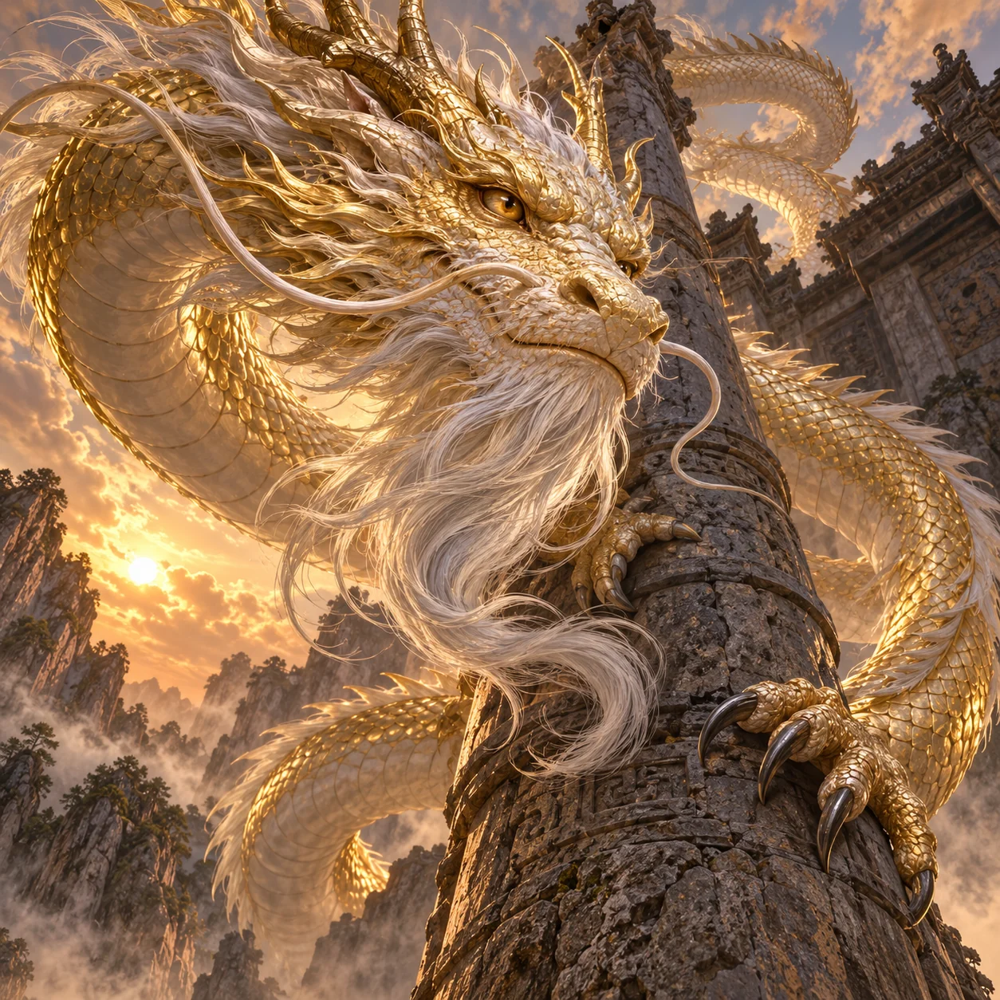
Wujud naga akhir novel dengan tanduk, sisik emas, dan janggut perak, terbang mengitari tiang gerbang gunung.
Aura: Keagungan hadir dari transformasi naga bertanduk dan sisik emas yang terbang mengitari tiang tinggi (white-dragon-horse-c23).
Audit ciri dan sumber
- [object Object]
- [object Object]
- [object Object]
PNG asli dilihat: naga memenuhi bingkai dan tetap agung pada thumbnail; gerak naik dan lilitan tiang terbaca, tanduk/sisik emas/janggut perak c23 jelas. Satu kepala, dua mata, dua cakar depan terlihat, bagian kaki belakang tertutup lilitan; tanpa anggota tambahan terlihat. Semua tujuh Uji Sangar dijawab ya; cahaya matahari editorial, bukan efek kekuatan. Kontak thumbnail asli berukuran200 piksel dilihat ulang bersama13 PNG lane-A; ciri subjek dan kesan sangar/agung tetap terbaca.
Review sumberONE original square premium painterly cinematic Mythics illustration of WHITE DRAGON HORSE, the dragon prince at his final elevation in Journey to the West.
ANATOMY: one serpentine dragon head, prominent horns, GOLD scales over a long coiling body, long SILVER beard; wingless. Four conventional dragon legs only, anatomically connected, two foreclaws visible grasping around a stone pillar; no horse head. [white-dragon-horse-c23]
MOMENT: surging upward into flight and curling around a tall stone pillar at the mountain gate, his massive head foreshortened toward the viewer, eyes intent and noble, beard streaming in movement.
POWER: physical flight and coiling, a dynamic articulated body winding around the pillar, suspended dust disturbed by his motion; no magic glow. [white-dragon-horse-c23]
SCALE & CAMERA: extreme low angle, tightly framed head and coil dominate nearly the entire square; pillar recedes sharply upward. This is a reverent awesome divine dragon, not a sinister monster.
LIGHT & WEATHER: one dying golden sun catches the edges of gold scales and the silver beard; deep walnut shadows and sparse nonluminous mountain haze.
SURFACE: individually layered metallic gold scales with painterly tactile detail, flowing silver whiskers, weathered rough stone.
SETTING: tall pillar at a mountain gate, only fragmentary architecture visible behind the dominant dragon. [white-dragon-horse-c23, white-dragon-horse-c22]
MOOD: awe-inspiring, overwhelming and imposing, never cute, calm or decorative.
HARD CONSTRAINTS: square 1024px or larger, no text, lettering, logo, border, frame or watermark; no extra heads, limbs or fingers; no design borrowed from any film, game, anime or comic; no nudity or explicit gore; no generic glow aura, neon outline or energy ribbons.
Melon heads
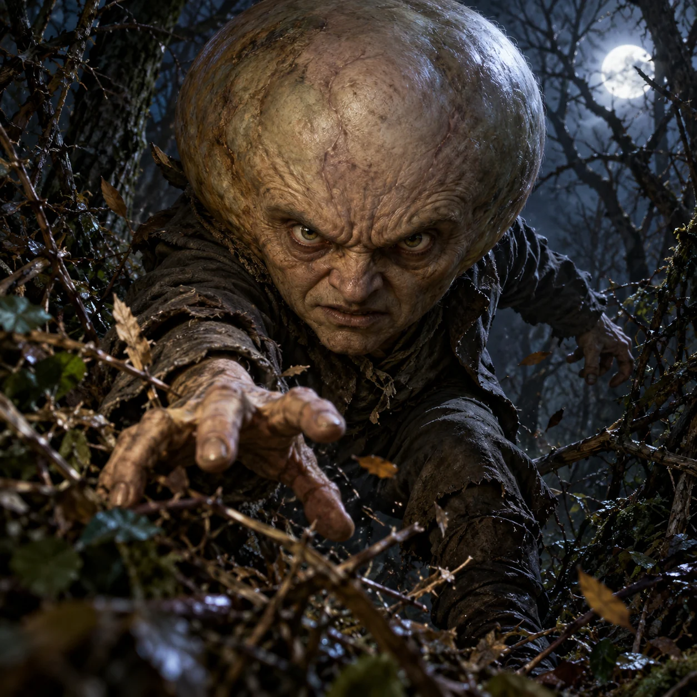
Satu humanoid berkepala balon besar dari legenda hutan malam, menerobos semak untuk mengejar orang.
Aura: Ancaman berasal dari siluet berkepala besar dan pengejaran hutan malam (c01/c12/c17) (klaim: melon-heads-c12, melon-heads-c17).
Audit ciri dan sumber
- [object Object]
- [object Object]
- [object Object]
PNG asli dilihat: satu kepala balon besar, dua mata dan dua tangan terbaca; lengan dan kaki tidak berlebih, figur menerobos semak dengan jangkauan konfrontatif. Seluruh tujuh Uji Sangar ya. Ancaman tetap jelas pada thumbnail. Tidak ada efek supernatural, teks, bingkai atau desain adaptasi. Kontak thumbnail asli berukuran200 piksel dilihat ulang bersama13 PNG lane-A; ciri subjek dan kesan sangar/agung tetap terbaca.
Review sumberONE original square premium painterly cinematic Mythics illustration of MELON HEADS, a fictional large-headed humanoid of American nocturnal woodland folklore.
ANATOMY: one fictional adult humanoid, an enormous balloon-shaped head wider than the shoulders, two eyes, one nose and mouth, two arms and two legs, fully dressed in opaque weathered dark clothes. No medical imagery, no depiction of a real person or medical patient; no children. [melon-heads-c01, melon-heads-c17]
MOMENT: bursting out from concealing brambles and lunging toward the viewer in a terrifying pursuit, torso leaning forward, one hand reaching past snapped twigs, the enlarged head dominating the image with a sharp hostile stare.
POWER: no documented supernatural power; menace through oversized fictional head, rushing movement, and shadows only; leaves scatter from physical movement. [melon-heads-c12, melon-heads-c17]
SCALE & CAMERA: extreme low-angle intimate close framing, ordinary adult body scale, enlarged head clearly readable at thumbnail size; no giant body.
LIGHT & WEATHER: one cold moonbeam striking the bulging forehead and reaching hand, deep walnut-black forest shadows and ordinary haze.
SURFACE: tactile weathered opaque cloth, rough tree bark, damp leaves, expressive painterly skin.
SETTING: a forest at night; twisted branches frame the creature. [melon-heads-c17]
MOOD: dangerous, predatory, imposing, never cute, calm or decorative.
HARD CONSTRAINTS: square 1024px or larger; no text, lettering, logo, border, frame or watermark; no extra heads, limbs or fingers; no design borrowed from films, games, anime or comics; no nudity, explicit gore, victims or medical diagnosis; no generic glow aura, neon outline or energy ribbons.
Ma Bong
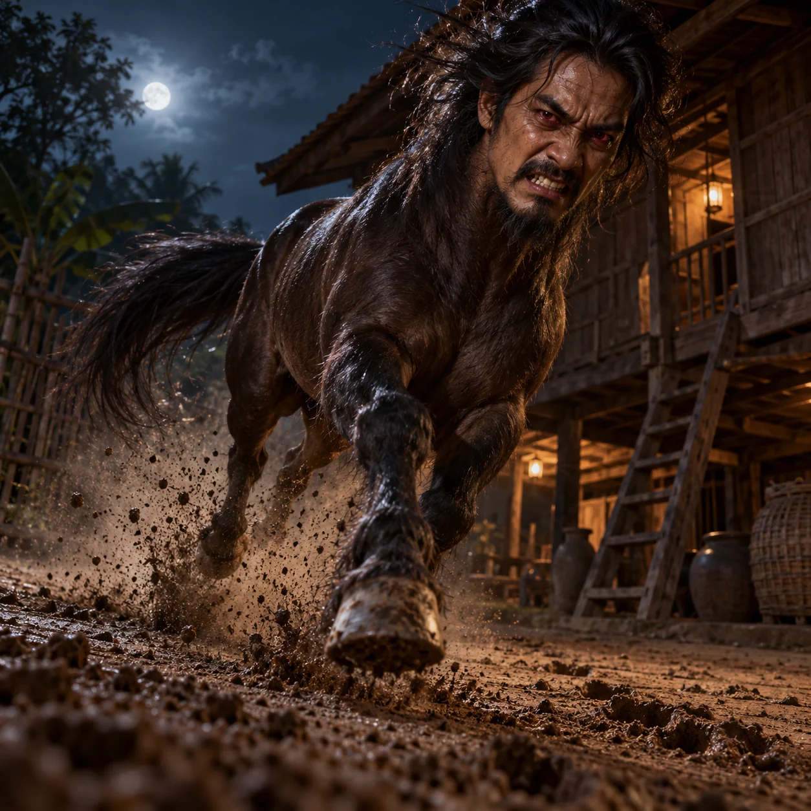
Roh Lanna dalam varian tubuh kuda dan kepala manusia laki-laki c14, bermata merah c13, mengejar di pekarangan rumah.
Aura: Ancaman dari hibrida kepala manusia/tubuh kuda bermata merah dan derap dekat rumah (c13/c14/c15) (klaim: ma-bong-c13, ma-bong-c14, ma-bong-c15).
Audit ciri dan sumber
- [object Object]
- [object Object]
- [object Object]
PNG asli dilihat: kepala laki-laki tunggal pada leher/tubuh kuda, empat kaki berkuku tanpa torso atau lengan manusia, mata merah jelas. Derap menyerbu dan tanah terlempar sesuai c13/c14/c15; figur mendominasi dan mengancam pada thumbnail. Semua tujuh Uji Sangar ya. Cahaya lentera tambahan adalah properti rumah editorial, bukan api kekuatan; tanpa teks/gore/desain adaptasi. Kontak thumbnail asli berukuran200 piksel dilihat ulang bersama13 PNG lane-A; ciri subjek dan kesan sangar/agung tetap terbaca.
Review sumberONE original square premium painterly cinematic Mythics illustration of MA BONG, the Lanna spirit with a human man's head and a horse's body in the houseyard tale.
ANATOMY: one adult HUMAN MALE head attached directly to a HORSE neck and horse torso, NO human torso, NO human arms; exactly FOUR equine legs with hooves and one horse tail; the face and head remain those of a man, eyes red like reflected firelight. The horse body is fully covered in dense dark hair; no exposed genitals. [ma-bong-c13, ma-bong-c14]
MOMENT: wheeling sharply around a wooden house and galloping toward the viewer, furious human face twisting toward us, hooves raking the dirt into unmistakable hoofprints.
POWER: physical pursuit and angry circling only, dirt kicked by the hooves, no magical smoke or flames. [ma-bong-c13, ma-bong-c14, ma-bong-c15]
SCALE & CAMERA: extreme low-angle close view from the dirt yard, head and powerful equine shoulders fill the square; ordinary horse size.
LIGHT & WEATHER: one low moonbeam, deep walnut shadow, dust thrown from dry soil.
SURFACE: coarse matted horse hair, aged human face, tactile mud, weathered wood.
SETTING: a northern Thai wooden houseyard at night, house ladder partly visible. [ma-bong-c14, ma-bong-c18]
MOOD: dangerous and imposing, never cute, calm or decorative.
HARD CONSTRAINTS: square at least 1024px; no text, lettering, logo, border, frame or watermark; no extra heads, limbs or fingers; no design borrowed from any film, game, anime or comic; no nudity or explicit gore; no generic glow aura, neon outline or energy ribbons.
Beast of Bladenboro
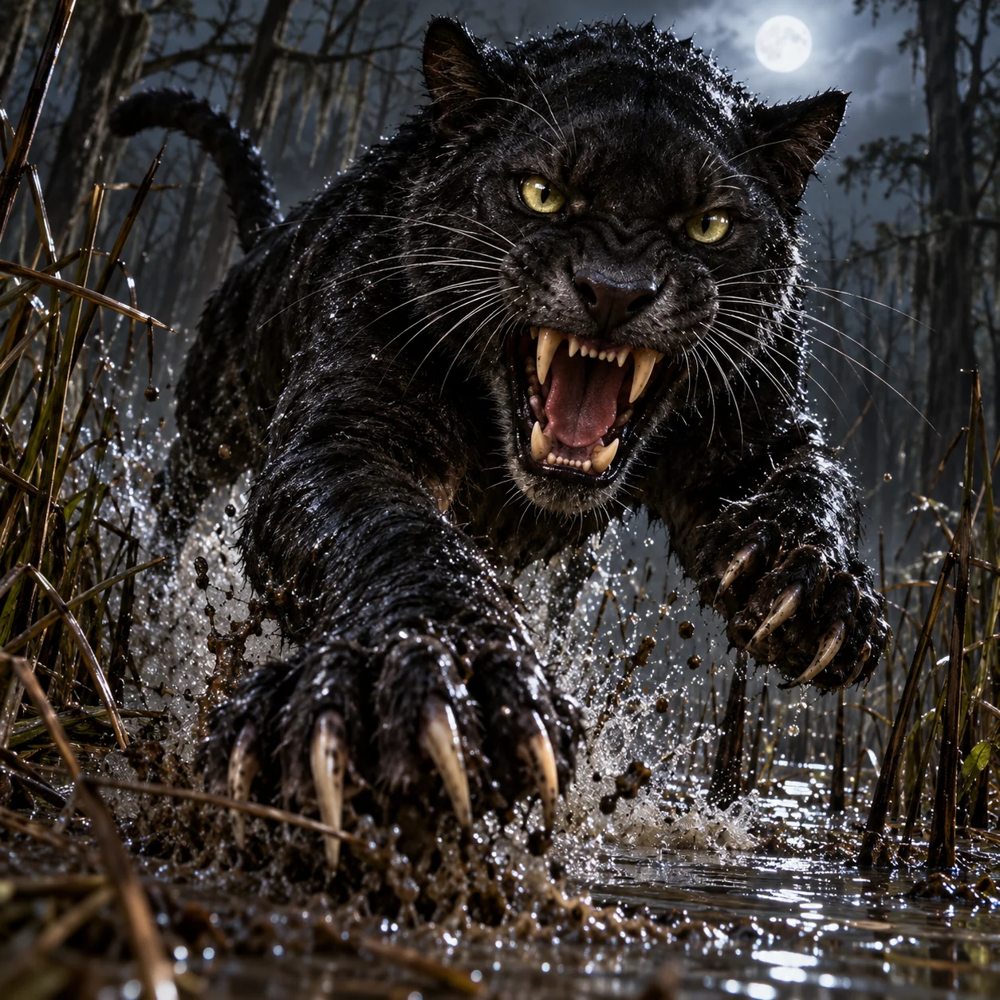
Kucing misterius berwarna hitam licin sekitar 1,5 meter, menyerbu dari rawa/hutan.
Aura: Serbuan kucing hitam dan jeritan mengancam mengikuti laporan c05/c18, tanpa kepastian spesies (klaim: beast-of-bladenboro-c05, beast-of-bladenboro-c18).
Audit ciri dan sumber
- [object Object]
- [object Object]
- [object Object]
PNG asli dilihat: serbuan kucing hitam konfrontatif, mulut berteriak dan dua cakar depan terulur, empat kaki tanpa anggota tambahan dan satu ekor. Subjek memenuhi bingkai, tetap mengancam pada thumbnail. Semua tujuh Uji Sangar ya: bukan hewan tenang di padang; percikan mengikuti gerak fisik, tanpa efek kuasa, gore, teks atau desain adaptasi. Kontak thumbnail asli berukuran200 piksel dilihat ulang bersama13 PNG lane-A; ciri subjek dan kesan sangar/agung tetap terbaca.
Review sumberONE original square premium painterly cinematic Mythics illustration of BEAST OF BLADENBORO, the elusive black feline-like creature of the 1953 North Carolina reports.
ANATOMY: sleek BLACK feline-like creature about five feet long, one head, two ears, two eyes, four muscular feline legs and one tail; uncertain species, no horns, wings, extra fangs or hybrid parts. [beast-of-bladenboro-c05, beast-of-bladenboro-c12]
MOMENT: exploding out of swamp reeds into a predatory close-range pounce toward the camera, mouth open in a terrible scream, teeth bared, forepaws advancing, water and mud scattering beneath its rear paws.
POWER: no documented supernatural power; danger through attack, scream and anatomy alone, no blood or victims. [beast-of-bladenboro-c05, beast-of-bladenboro-c18]
SCALE & CAMERA: water-level extreme low angle, enormous close foreshortened face and attacking paws fill the square; maintain normal five-foot body length.
LIGHT & WEATHER: one cold moon shaft catches the black wet coat and teeth, deep walnut darkness behind, ordinary swamp haze and nonluminous droplets.
SURFACE: slick wet black fur, sharp claws, damp bark, muddy reed roots.
SETTING: woods and swamp around Bladenboro at night. [beast-of-bladenboro-c08]
MOOD: dangerous and imposing, never cute, calm or decorative.
HARD CONSTRAINTS: square at least 1024px; no text, lettering, logo, border, frame or watermark; no extra heads, limbs or fingers; no design borrowed from any film, game, anime or comic; no nudity or explicit gore; no generic glow aura, neon outline or energy ribbons.
Itsumade
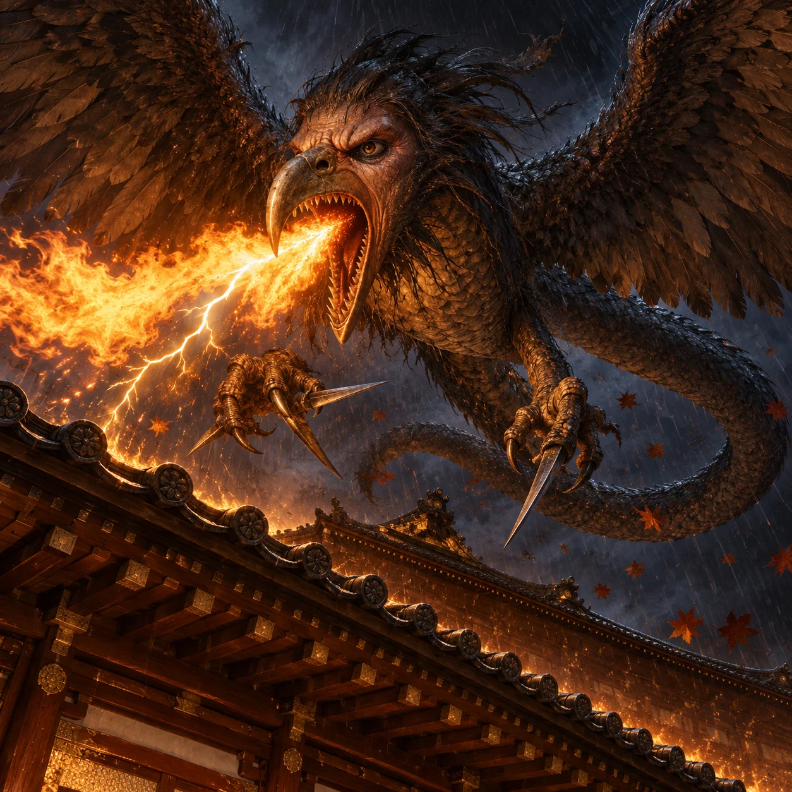
Burung Taiheiki berwajah manusia, paruh bergigi gergaji, tubuh ular, dua sayap dan dua kaki bercakar tajam, berseru di atas Shishinden.
Aura: Keanehan anatomi c10 dan nyala/kilat dalam seruan c11 membuatnya berbahaya (klaim: itsumade-c11).
Audit ciri dan sumber
- [object Object]
- [object Object]
- [object Object]
PNG asli dilihat: satu wajah mirip manusia dengan paruh melengkung dan gigi gergaji, tubuh panjang bersisik melingkar, dua sayap dan dua kaki bertaji tajam. Serbuan di atas Shishinden, nyala dan kilat lokal dari seruan c11. Subjek mendominasi dan masih mengancam pada thumbnail; semua tujuh Uji Sangar ya. Tidak ada teks/gore/atribut adaptasi. Kontak thumbnail asli berukuran200 piksel dilihat ulang bersama13 PNG lane-A; ciri subjek dan kesan sangar/agung tetap terbaca.
Review sumberONE original square premium painterly cinematic Mythics illustration of ITSUMADE, the eerie bird described in the Taiheiki.
ANATOMY: exactly ONE head with a HUMAN-LIKE face merged with a strongly curved forward BEAK lined with SAW-LIKE TEETH, TWO eyes; long SNAKE-shaped body; exactly TWO broad bird wings spanning about 4.8 metres, TWO feet with long sword-sharp spurs. No extra heads, no human arms. [itsumade-c10]
MOMENT: swooping down toward the viewer while crying fiercely, wings thrown wide above a palace roof, serpentine body curling behind, two clawed feet thrust forward.
POWER: its cry seems to spit a SHORT flame from the mouth, a single fork of lightning flashing immediately within the cry; these cast sharp light across the palace roof. No energy halo, no runes. [itsumade-c11]
SCALE & CAMERA: extreme low angle looking from close palace eaves, bird fills the square, small roof tiles show its documented large wingspan.
LIGHT & WEATHER: flame from mouth is the dominant amber light with sharp dark shadows, faint autumn rain, no daylight.
SURFACE: coarse dark feathers, reptilian textured body, hard hooked beak and teeth, ancient roof tiles.
SETTING: night sky directly above Shishinden during autumn. [itsumade-c09]
MOOD: dangerous and imposing, never cute, calm or decorative.
HARD CONSTRAINTS: square at least 1024px; no text, lettering, logo, border, frame or watermark; no extra heads, limbs or fingers; no design borrowed from any film, game, anime or comic; no nudity or explicit gore; no generic glow aura, neon outline or energy ribbons.
Mapinguari
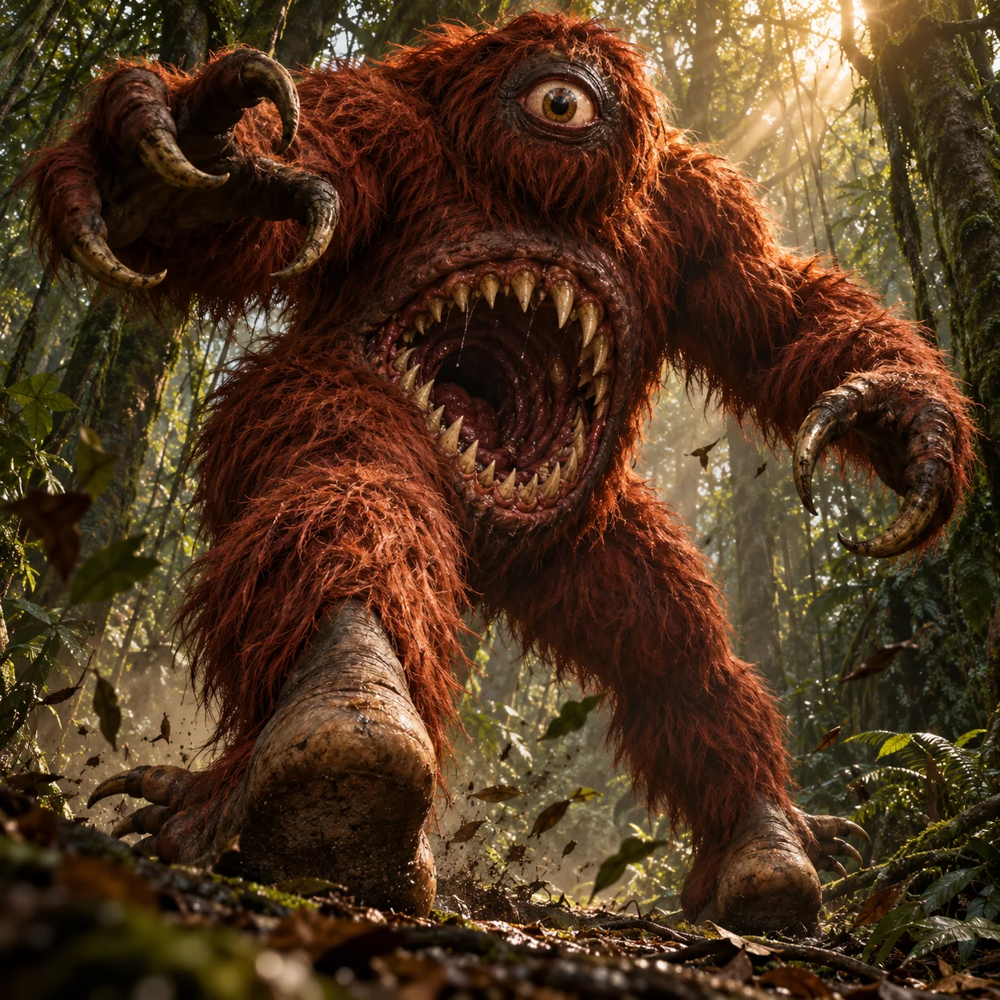
Varian berukuran manusia besar, satu mata di dahi dan mulut raksasa di perut, bulu merah kusut dan kaki terbalik.
Aura: Satu mata, mulut perut dan kaki terbalik c20 serta terkam c10 menyampaikan bahaya tanpa efek generik (klaim: mapinguari-c10).
Audit ciri dan sumber
- [object Object]
- [object Object]
- [object Object]
PNG asli percobaan kedua dilihat: tepat satu mata dahi dan satu mulut perut, dua lengan berkuku kait dan dua kaki terbalik. Tumit menghadap depan/penonton, jari berkuku memanjang ke sisi-belakang kedua kaki; tidak ada mulut wajah. Bulu merah, terkam, latar hutan c20/c10 jelas. Semua tujuh Uji Sangar ya; ancaman pada thumbnail kuat. Percobaan1 diarsip karena orientasi kaki samar. Tanpa efek supernatural/teks/gore. Kontak thumbnail asli berukuran200 piksel dilihat ulang bersama13 PNG lane-A; ciri subjek dan kesan sangar/agung tetap terbaca.
Review sumberONE original square premium painterly cinematic Mythics illustration of MAPINGUARI, the Brazilian forest being in its single forehead eye and belly mouth variant.
ANATOMY: one head with EXACTLY ONE large eye centred in the forehead, NO second eye and NO face mouth; huge open tooth-lined mouth in the middle of the BELLY; body covered in long shaggy REDDISH fur; TWO arms with hook-shaped nails, TWO legs, BOTH feet anatomically reversed: the HEELS face FORWARD toward the viewer and the TOES with nails extend BEHIND the calves AWAY from viewer, soles point down; large human body size. [mapinguari-c02, mapinguari-c20]
MOMENT: lunging from the deep forest toward us, single eye fixed on viewer, belly mouth wide open, arms spread and curled hook nails reaching, both backward feet readable in a side three-quarter stance: the feet point back behind its body, toes and nails visibly extend toward the rear, two blunt HEELS face the foreground. Neither foot may point toes toward the camera.
POWER: physical ambush and terrible scream; no visible magic and no stench cloud. Leaves scatter from the movement. [mapinguari-c10]
SCALE & CAMERA: ground-level extreme low angle, frame includes both reversed feet, clearly showing heel pads in the foreground and toes pointing backward, and dominates from feet to head; tight foreshortened full-body portrait, no giant scale exaggeration.
LIGHT & WEATHER: one late sun shaft from a break in the canopy, deep warm black shadows, plain damp haze.
SURFACE: thick matted rust-red fur, dark rough skin around the single eye and belly jaws, muddy feet, mossy roots.
SETTING: dim deep forest. [mapinguari-c10]
MOOD: dangerous and imposing, never cute, calm or decorative.
HARD CONSTRAINTS: square at least 1024px; no text, lettering, logo, border, frame or watermark; no extra heads, limbs or fingers; no design borrowed from any film, game, anime or comic; no nudity or explicit gore; no generic glow aura, neon outline or energy ribbons.
Nine-headed bird
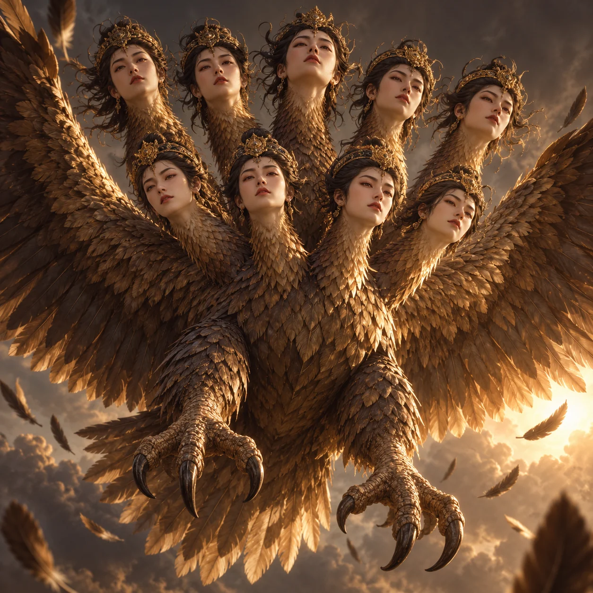
Jiufeng Shanhaijing: sembilan kepala berwajah manusia pada satu tubuh burung, turun secara agung.
Aura: Keagungan datang dari sembilan wajah Jiufeng c10, tanpa menggabungkan varian Guiche berleher berdarah (klaim: nine-headed-bird-c10).
Audit ciri dan sumber
- [object Object]
- [object Object]
- [object Object]
PNG asli dilihat dan dihitung: lima kepala berwajah manusia di baris atas, empat di bawah, total tepat sembilan pada satu torso burung, dua sayap dan dua kaki. Turun dengan cakar terulur dan bulu bergerak, sudut kamera rendah memberi keagungan pada thumbnail. Semua tujuh Uji Sangar ya untuk dewa Jiufeng: sembilan wajah/tubuh burung c10, tanpa darah/leher kesepuluh/kuasa Guiche, teks atau desain adaptasi. Ornamen emas styling editorial. Kontak thumbnail asli berukuran200 piksel dilihat ulang bersama13 PNG lane-A; ciri subjek dan kesan sangar/agung tetap terbaca.
Review sumberONE original square premium painterly cinematic Mythics illustration of NINE-HEADED BIRD, specifically the Jiufeng deity of the Shanhaijing, with nine human-faced heads and a bird body.
ANATOMY: EXACTLY NINE distinct HUMAN-FACED heads on NINE separate long avian necks attached to ONE bird torso. Exactly TWO broad feathered wings and TWO avian feet. Nine faces must be clearly separated and countable, no overlap: five heads across the upper arc, four across the lower arc, one common torso beneath. Human faces with noses and mouths, not duck or eagle heads. [nine-headed-bird-c10]
MOMENT: descending overwhelmingly toward the viewer, wings beating wide, all nine sovereign faces looking downward at us with focused commanding expressions, two bird feet extended.
POWER: no documented power for this selected Jiufeng variant; majesty through nine heads, wings, and falling feathers only. Do not use the other Guiche variant's blood, headless neck or soul-stealing.
SCALE & CAMERA: extremely low angle, close framing of heads and bird torso; monumental compositional presence, no humans for invented size.
LIGHT & WEATHER: one warm low sun beam catches face edges and antique-gold feathers, deep walnut shadows, nonluminous ordinary haze.
SURFACE: tactile layered brown and antique-gold bird feathers, expressive human faces, rough talons.
SETTING: dark minimal sky and neutral shadow background evocative of ancient Chu; no specific invented building. [nine-headed-bird-c02]
MOOD: reverent, awe-inspiring and overwhelming divine presence, not evil, cute or decorative.
HARD CONSTRAINTS: square at least1024px; exactly nine human-faced heads, one torso, two wings, two feet; no text, lettering, logo, border, watermark, extra heads or limbs, no film/game/anime/comic design, no nudity or gore, no generic glowing aura, neon or energy ribbons.
Nukekubi
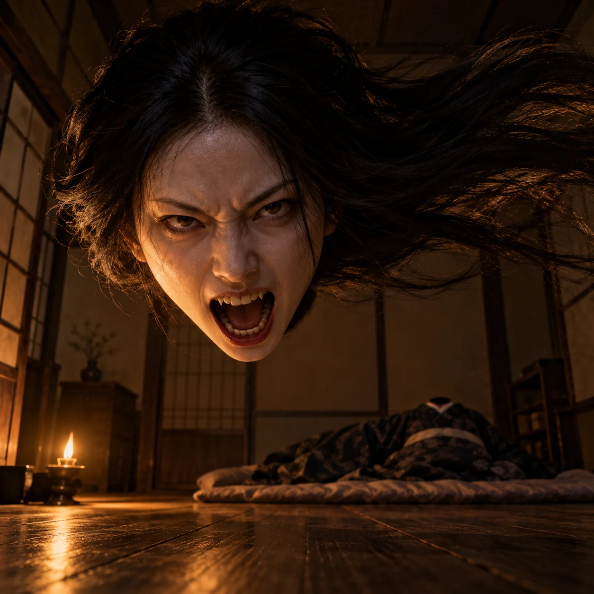
Kepala perempuan terlepas sepenuhnya dan melayang mendekat; tubuh tidur berpakaian penuh di latar.
Aura: Kepala terbang terpisah c02/c05 dan tatapan memburu c06 memberi keanehan mengancam (klaim: nukekubi-c02, nukekubi-c06).
Audit ciri dan sumber
- [object Object]
- [object Object]
- [object Object]
PNG asli dilihat: satu kepala perempuan terbang memenuhi foreground, ruang kosong jelas di bawah dagu; tubuh berpakaian kimono di futon benar-benar tanpa kepala. Dua mata, satu mulut, tidak ada leher memanjang/luka/darah. Rambut bergerak dan ekspresi memburu, semua tujuh Uji Sangar ya. Lampu merupakan cahaya editorial, kuasa hanya terbang c02; tanpa teks/desain adaptasi. Kontak thumbnail asli berukuran200 piksel dilihat ulang bersama13 PNG lane-A; ciri subjek dan kesan sangar/agung tetap terbaca.
Review sumberONE original square premium painterly cinematic Mythics illustration of NUKEKUBI, the Japanese yokai whose head detaches completely and flies away.
ANATOMY: ONE adult woman's head entirely detached from ONE sleeping headless human body; exactly two eyes and one mouth; the detached head has NO extended neck, NO tether, NO body underneath it; long black hair trails backward. The neck ends in a clean dark shadow, no wound, blood or exposed flesh. Background body is fully covered by an opaque dark kimono with two arms and two legs concealed beneath it. [nukekubi-c01, nukekubi-c05, nukekubi-c13]
MOMENT: flying straight toward the viewer with ravenous open mouth and hostile narrowed eyes, hair streaming backward in motion. The sleeping original body lies far behind on a futon, visibly without another head.
POWER: independent flight of the separated head, predatory bloodthirst conveyed only through expression, no victim or blood. [nukekubi-c02, nukekubi-c06]
SCALE & CAMERA: extreme low angle, detached head fills nearly the whole foreground, clearly empty air beneath head and between it and the distant sleeping body.
LIGHT & WEATHER: one small oil lamp creates amber upward light and deep walnut shadows; ordinary indoor dust only.
SURFACE: tactile black hair, weathered fabric, matte human skin, wooden floor.
SETTING: sleeping body's plain dark Edo-era room, furniture restrained; room is editorial staging of the sleeping-head-wandering account. [nukekubi-c13]
MOOD: dangerous and imposing, never cute, calm or decorative.
HARD CONSTRAINTS: square at least 1024px; no text, lettering, logo, border, frame or watermark; no extra heads, limbs or fingers; no design borrowed from any film, game, anime or comic; no nudity or explicit gore; no generic glow aura, neon outline or energy ribbons.
Jenglot
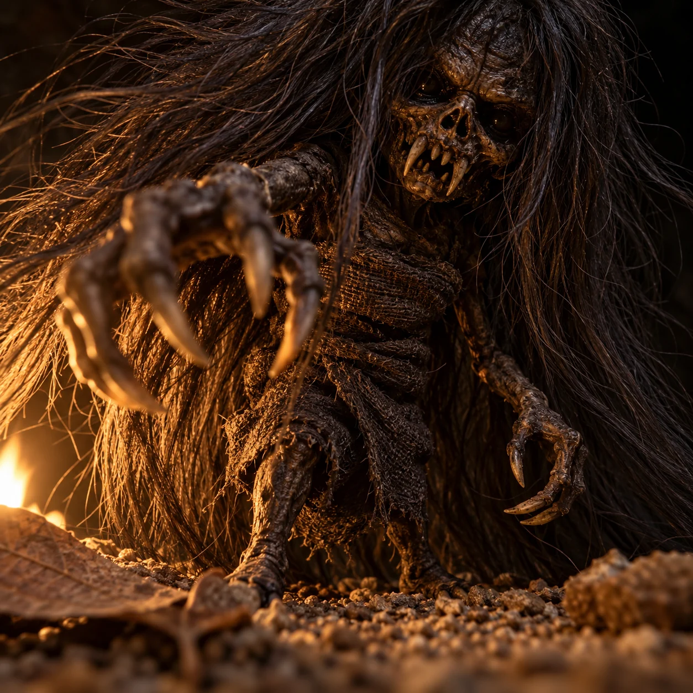
Manifestasi siluman melalui benda menjadi sosok kecil berkulit gelap kasar, wajah tengkorak bertaring, rambut dan kuku panjang.
Aura: Keganjilan manifestasi siluman c25 dan wajah tengkorak/taring/kuku c24 memberi ancaman pada skala kecil (klaim: jenglot-c25).
Audit ciri dan sumber
- [object Object]
- [object Object]
- [object Object]
PNG asli dilihat: humanoid mini berkulit gelap kasar, wajah tengkorak bertaring, rambut panjang/kuku panjang c24/c06, satu kepala dua mata dua lengan dua kaki. Butir tanah dan daun memberi skala kecil. Momen bentuk menakutkan tersingkap c25 dengan rambut bergerak dan tangan foreshortened; semua tujuh Uji Sangar ya. Ini pilihan manifestasi c25, bukan klaim semua boneka jenglot bergerak; tanpa efek proteksi/balas dendam, darah, teks atau desain adaptasi. Kontak thumbnail asli berukuran200 piksel dilihat ulang bersama13 PNG lane-A; ciri subjek dan kesan sangar/agung tetap terbaca.
Review sumberONE original square premium painterly cinematic Mythics illustration of JENGLOT, the frightening tiny humanlike form in the belief that a siluman manifests through an object.
ANATOMY: one miniature humanoid 10-20 centimetres tall, one skull-like face with protruding fangs, dark rough mummy-like skin, extremely long coarse black hair reaching its feet, two arms with long curled nails, two legs. Hair and a fully opaque small rough cloth wrap cover the chest and pelvis completely. No nudity. [jenglot-c24, jenglot-c06]
MOMENT: its frightening form becoming discernible from deep shadow, leaning visually over the macro camera, skeletal face suddenly revealed between wind-tossed strands, one long-nailed hand extended in the foreground. Depict a moment of manifestation, not a toy on a display stand. No claim of walking or consuming blood.
POWER: taking frightening physical form through an object is the selected belief; no visible magical energy, no revenge beams, no blood. [jenglot-c25]
SCALE & CAMERA: extreme low-angle MACRO ground view; the 10-20cm creature fills the square, large individual grains of sand and a dry leaf establish its tiny true size; never a human-sized giant.
LIGHT & WEATHER: one small amber oil flame off-screen lights the harsh fangs and rough skin from below, deep walnut black shadows, ordinary dust and a gust moving long hair.
SURFACE: dry cracked dark skin, coarse stiff hair, long keratin nails, gritty earth.
SETTING: minimal dark earthy backdrop, editorial staging of the object-manifestation belief. [jenglot-c25]
MOOD: dangerous and imposing, never cute, calm or decorative.
HARD CONSTRAINTS: square at least 1024px; no text, lettering, logo, border, frame or watermark; no extra heads, limbs or fingers; no design borrowed from any film, game, anime or comic; no nudity or explicit gore; no generic glow aura, neon outline or energy ribbons.
Ogopogo
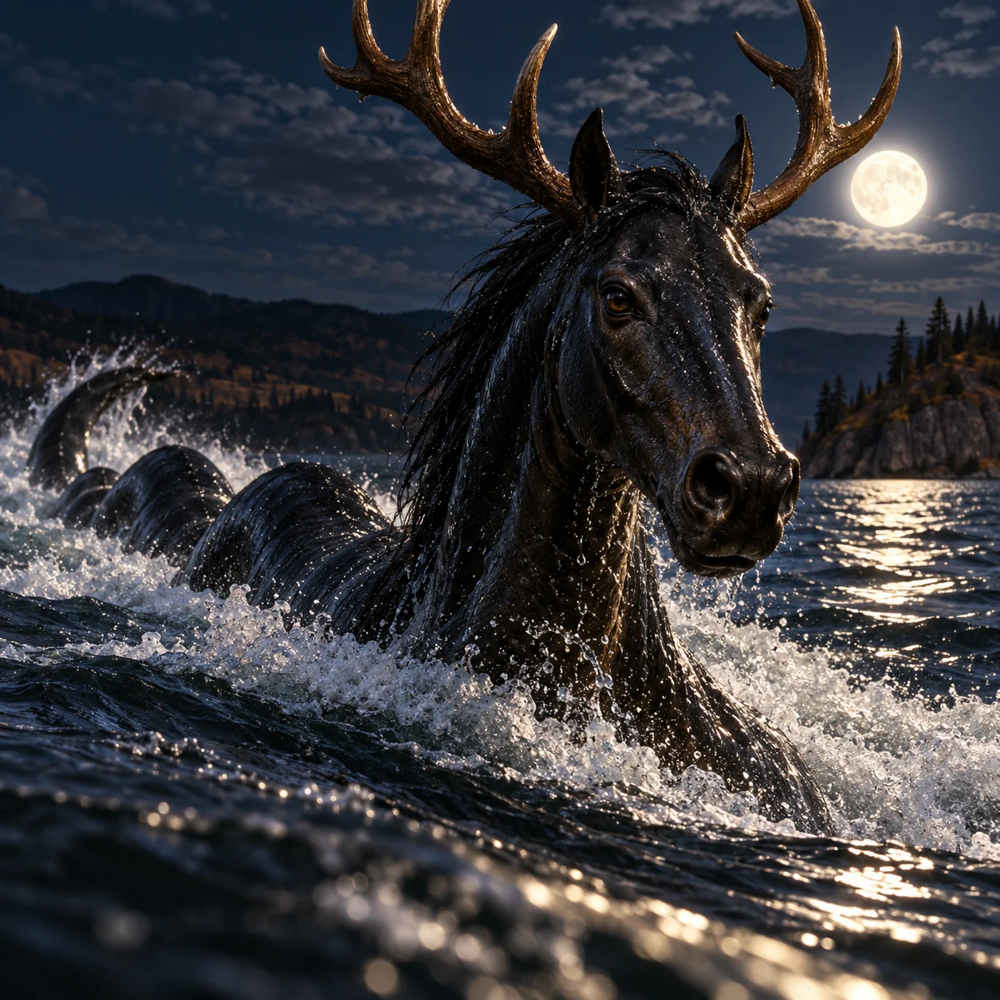
Varian roh danau bertubuh ular gelap, kepala kuda dan tanduk rusa c17, melaju dengan undulasi vertikal c05.
Aura: Gerak kuat dan anatomi roh danau c17/c05 terasa agung, mengikuti penghormatan roh pelindung c10 (klaim: ogopogo-c05).
Audit ciri dan sumber
- [object Object]
- [object Object]
- [object Object]
PNG asli dilihat: satu kepala kuda dengan sepasang tanduk rusa c17, tubuh ular gelap berundulasi vertikal dan ekor kuat c05, tanpa kaki/sirip tambahan. Gerak maju ditandai ombak/percikan dan humps, wajah noble sesuai roh pelindung c10. Semua tujuh Uji Sangar ya: subjek memenuhi bingkai, agung pada thumbnail, bukan kuda biasa karena tanduk/tubuh ular terbaca. Tanpa badai demonik/korban/efek kuasa tak diklaim, teks atau desain adaptasi. Kontak thumbnail asli berukuran200 piksel dilihat ulang bersama13 PNG lane-A; ciri subjek dan kesan sangar/agung tetap terbaca.
Review sumberONE original square premium painterly cinematic Mythics illustration of OGOPOGO, the sacred physical-form lake spirit described with a horse head and deer antlers.
ANATOMY: ONE dark HORSE-like head with TWO deer antlers, two eyes, attached to ONE long dark serpentine body with a powerful tail; NO legs, NO fins, NO extra heads. Smooth black skin, multiple body humps formed by vertical undulations. [ogopogo-c17, ogopogo-c05]
MOMENT: surging past and toward the viewer at water level, horse head raised above churning water, antlers sharply silhouetted, long body undulating vertically behind it, powerful tail driving the wake.
POWER: incredible-speed swimming and vertical body undulations, physical whitewater and wake from its strong tail; no unnatural storm, no drowning victims. [ogopogo-c05]
SCALE & CAMERA: extremely low water-level close framing, head, antlers and neck dominate the square; no human scale reference or imposed exact length.
LIGHT & WEATHER: one silver moon reflected across wet black skin and spray, warm walnut dark shore and deep blue-black shadows.
SURFACE: smooth wet black skin, coarse antler material, tactile lake water spray.
SETTING: Okanagan Lake near Rattlesnake Island, distant dark shoreline only. [ogopogo-c31]
MOOD: reverent, awe-inspiring and imposing sacred protector; noble watchful eyes, never evil, cute, calm or decorative. [ogopogo-c10]
HARD CONSTRAINTS: square at least1024px; no text, logo, border, frame, watermark; no extra head or limbs, no popular media design, no nudity or gore, no generic glow aura/neon/energy ribbons.
Rainbow Serpent
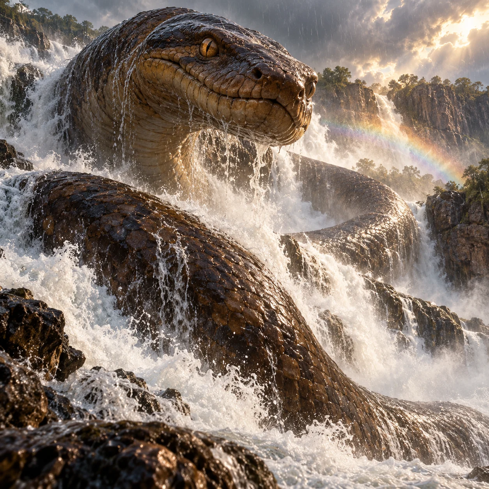
Ngalyod sebagai ular pencipta perempuan, menampakkan diri agung di aliran air deras dan hujan tanpa menyalin pola seni sakral.
Aura: Ngalyod pencipta c16 menjulang sebagai tubuh ular di air terjun yang merupakan suaranya c18; megah dan menggetarkan, bukan jahat c20 (klaim: rainbow-serpent-c18, rainbow-serpent-c11).
Audit ciri dan sumber
- [object Object]
- [object Object]
- [object Object]
PNG asli dilihat: satu kepala ular, dua mata sesuai perspektif, satu tubuh melingkar tanpa kaki/tanduk/sayap. Kepala dan coil memenuhi bingkai, air terjun membentur tubuh dalam momen kemunculan kuat, pelangi optik samar pada spray c17 dan air terjun sebagai suara c18. Semua tujuh Uji Sangar ya: megah pada thumbnail, bukan lanskap/hewan kecil; tanpa korban, pola seni sakral, aura atau teks. Kesan sakral dijaga c20. Kontak thumbnail asli berukuran200 piksel dilihat ulang bersama13 PNG lane-A; ciri subjek dan kesan sangar/agung tetap terbaca.
Review sumberONE original square premium painterly cinematic Mythics illustration of RAINBOW SERPENT, specifically Ngalyod, the all-powerful female ancestral creator in Kuninjku accounts, treated respectfully.
ANATOMY: ONE great serpentine body, ONE broad snake head, TWO watchful eyes, NO legs, NO horns, NO wings, NO human features; earthy dark brown scales, unmarked by borrowed sacred art patterns. [rainbow-serpent-c16, rainbow-serpent-c17]
MOMENT: rising powerfully through the foreground cascade, coiling around the rushing falls, broad snake head looming over the viewer, water sheeting from her moving body.
POWER: the roar of the waterfall is her voice; monsoon rain and floodwater gather around her, physical torrents overwhelm the rocky river bank. No lightning, no victims. [rainbow-serpent-c18, rainbow-serpent-c11]
SCALE & CAMERA: extreme low angle at the riverbank, serpent head and enormous moving coil fill nearly the whole square, only fragments of wet cliffs behind.
LIGHT & WEATHER: one warm broken shaft of low sunlight through monsoon clouds, deep walnut shadows, heavy rain and natural waterfall spray; a faint NATURAL optical rainbow in the spray behind her, not a glowing body or an energy ribbon. [rainbow-serpent-c17]
SURFACE: tactile wet dark scales, rough sandstone escarpment, foaming water.
SETTING: rushing waterfall in Escarpment Country and stony river bank. [rainbow-serpent-c18]
MOOD: reverent, overwhelming, awe-inspiring creator presence, powerful and splendid rather than evil or monstrous. [rainbow-serpent-c20]
HARD CONSTRAINTS: square at least1024px; no text/logo/border/watermark, no extra heads/limbs, no media designs, no copied Aboriginal sacred art motifs, no ritual depictions, no nudity or gore; no generic glow aura/neon/energy ribbons.
Korean dragon
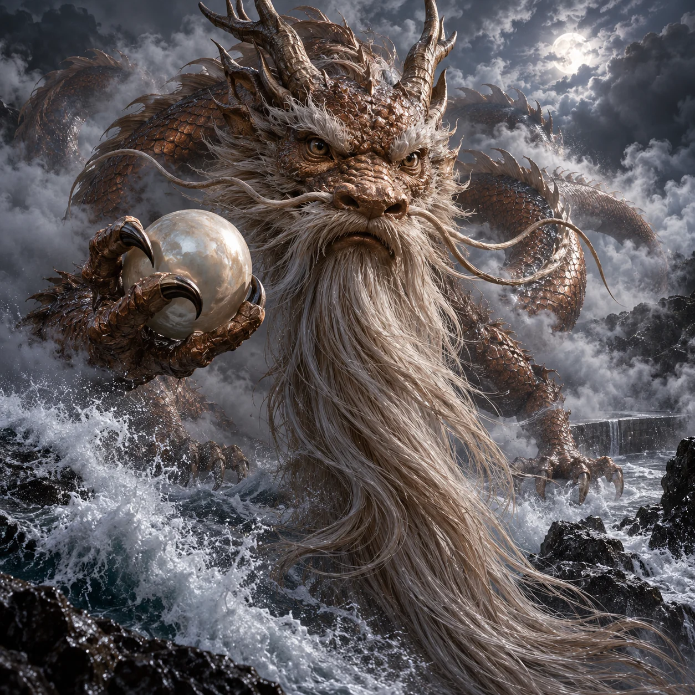
Naga Korea berjanggut sangat panjang membawa yeouiju di cakar dan muncul dari kabut Laut Timur.
Aura: Janggut panjang dan yeouiju c05/c06 serta kabut transformasi c11 memberi keagungan, tanpa menambahkan kuasa orb (klaim: korean-dragon-c11).
Audit ciri dan sumber
- [object Object]
- [object Object]
- [object Object]
PNG asli dilihat: satu kepala naga dua mata, janggut panjang sampai bagian bawah bingkai c05, satu yeouiju jelas di cakar c06, tubuh serpentin tanpa sayap, kaki tidak berlebih. Muncul dari kabut/awan yang menggelapkan pesisir c11, janggut/percikan bergerak, semua tujuh Uji Sangar ya; subjek agung pada thumbnail. Orb reflektif tidak memancarkan kuasa, tanpa kilat/aura/teks/gore atau desain adaptasi. Kontak thumbnail asli berukuran200 piksel dilihat ulang bersama13 PNG lane-A; ciri subjek dan kesan sangar/agung tetap terbaca.
Review sumberONE original square premium painterly cinematic Mythics illustration of KOREAN DRAGON, the East Sea dragon emerging through its transformation clouds and fog.
ANATOMY: ONE dragon head, TWO eyes, extremely LONG streaming BEARD clearly reaching below the chest; ONE yeouiju orb held in a visible foreclaw. Conventional original wingless serpentine scaled dragon body, TWO horns and FOUR articulated dragon legs, no extra limbs. Copper-brown scales are editorial. The beard is the prominent identifying feature. [korean-dragon-c05, korean-dragon-c06]
MOMENT: sweeping forward out of black coastal fog toward the viewer, beard streaming, one foreclaw extending the rounded yeouiju near its face, coils driving sea spray aside.
POWER: thick CLOUDS and FOG darken the coastal road as the dragon transforms; no lightning, no orb beams or magical glow. [korean-dragon-c11]
SCALE & CAMERA: extremely low angle close framing, dragon face, long beard and orb dominate the square, no invented size comparison.
LIGHT & WEATHER: one moonbeam catches the wet copper scales, long silver-brown beard and polished orb, deep walnut shadows and rolling ordinary sea fog.
SURFACE: tactile wet scales, coarse long beard, smooth reflective orb, foaming seawater.
SETTING: sea and obscured coastal road in thick clouds and fog. [korean-dragon-c03, korean-dragon-c11]
MOOD: reverent, awe-inspiring and overwhelming, noble and commanding, never evil, cute or decorative.
HARD CONSTRAINTS: square at least1024px; no text, logo, border, watermark; no extra heads, limbs or fingers; no modern media design; no nudity/gore; no generic glowing aura, neon outlines or energy ribbons.
Longma
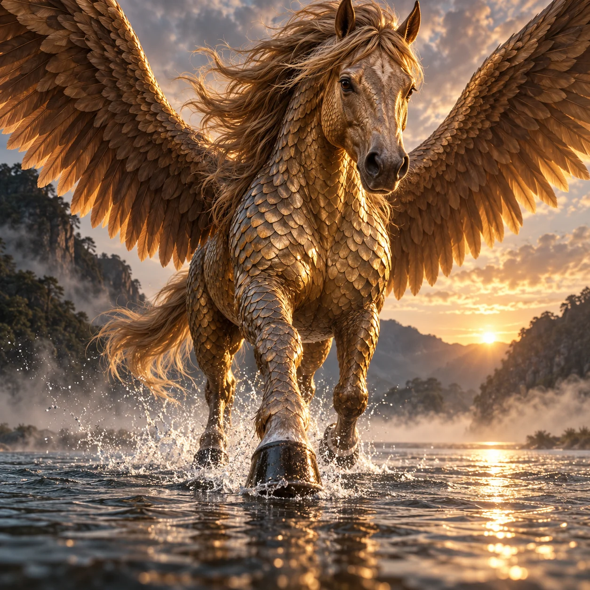
Kuda bersayap di sisi tubuh bersisik naga, berjalan di permukaan sungai tanpa tenggelam.
Aura: Sayap/sisik dan langkah di atas air c07 memberi keagungan sebagai pertanda baik c02 (klaim: longma-c07).
Audit ciri dan sumber
- [object Object]
- [object Object]
- [object Object]
PNG asli dilihat: satu kepala kuda dua mata, dua sayap sisi, empat kaki berkuku, satu ekor dan sisik naga besar jelas menutupi tubuh c01/c07. Kuku depan menyentuh permukaan air tanpa tenggelam, langkah maju/percikan/mane bergerak c07. Semua tujuh Uji Sangar ya: subjek agung pada thumbnail, bukan kuda peternakan karena sisik/sayap terbaca; tanpa peta, warna varian741, efek aura, teks/gore atau desain adaptasi. Kontak thumbnail asli berukuran200 piksel dilihat ulang bersama13 PNG lane-A; ciri subjek dan kesan sangar/agung tetap terbaca.
Review sumberONE original square premium painterly cinematic Mythics illustration of LONGMA, the winged dragon-scaled horse that walks on water without sinking.
ANATOMY: ONE unmistakable HORSE head with TWO eyes and TWO ears, horse neck and muscular HORSE body covered in clearly visible overlapping DRAGON SCALES; exactly FOUR equine legs with hooves, ONE horse tail; exactly TWO large feathered wings attached at its SIDES. No dragon head, no horns. [longma-c01, longma-c07]
MOMENT: advancing forcefully toward the viewer across the very surface of the river, wings spread upward and outward, one hoof pressing on the WATER SURFACE without sinking, other legs striding; proud focused gaze.
POWER: walking upon water without sinking, sharp rings of surface water and small splashes under the contacting hooves, no floating platform, no energy aura. [longma-c07]
SCALE & CAMERA: extremely low water-level angle, head, dragon scales, wings and advancing hooves fill the square, ordinary tall horse scale.
LIGHT & WEATHER: one late sun lights edges of bronze-gold scales and brown feathers, deep walnut shadow, ordinary river mist.
SURFACE: hard layered dragon scales visibly replace body coat, horse mane strands, tactile feather layering, wet dark hooves.
SETTING: river surface, only dark banks faintly visible. [longma-c07]
MOOD: awe-inspiring, powerful and imposing auspicious being, never evil, cute, calm or decorative. [longma-c02]
HARD CONSTRAINTS: square at least1024px; no text, lettering, logo, border, frame or watermark; no extra heads, limbs or wings; no film/game/anime/comic design; no nudity/gore; no generic glow aura, neon outline or energy ribbons.
Piuchén
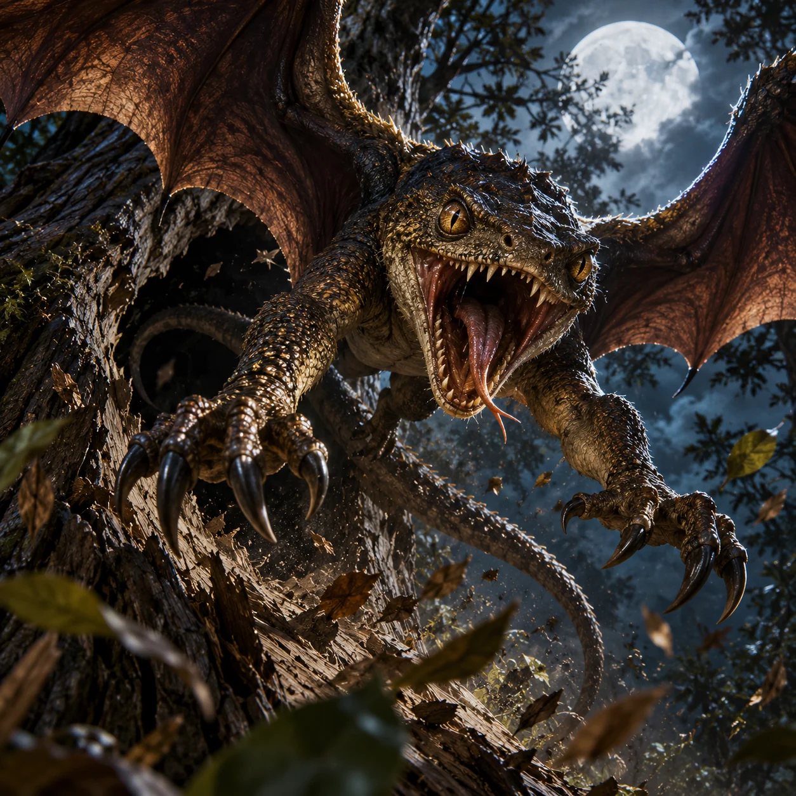
Large bat-winged lizard variant; threat from the predatory dive rather than invented power
Aura: Kesan kuat berasal dari dive out of a hollow trunk toward the viewer with jaws open, front claws foreshortened (piuchen-c07).
Audit ciri dan sumber
- [object Object]
- [object Object]
- [object Object]
PNG asli diperiksa: Uji Sangar 7/7 ya. Kepala kadal dan dua sayap membran dominan; kedua cakar depan menerjang kamera, tubuh belakang dan kaki belakang terforeshortening di balik tubuh. Tidak ada efek gaib tambahan, teks, bingkai, atau gore.
Review sumberONE original square premium painterly cinematic Mythics illustration of Piuchén, a nocturnal blood-sucking bat-winged lizard of Mapuche lore.
ANATOMY: one head, two eyes, four lizard legs, a long reptilian tail and exactly two membranous bat wings; retain lizard anatomy without horns [piuchen-c02,piuchen-c08]
MOMENT: Dive out of a hollow trunk toward the viewer with jaws open, front claws foreshortened.
POWER: No visible supernatural power; nocturnal flight only, wing downstroke drives loose leaves [piuchen-c07]
SCALE & CAMERA: extreme low angle; close dramatic foreshortening; subject fills almost the entire square frame, distinguishable anatomy immediately readable; no invented giant size.
LIGHT & WEATHER: one dominant moonlight source, strong rim light, deep walnut shadows and antique gold highlights, airborne spray or dust only where physical action causes it.
SURFACE: tactile rough fur, feather, scale, fabric or wet skin appropriate to the stated anatomy; strong painterly material detail, never plastic.
SETTING: the dark forest and a hollow old tree [piuchen-c07,piuchen-c19]
MOOD: dangerous and imposing or respectfully awe-inspiring for sacred beings; decisive action, never cute, calm or decorative.
HARD CONSTRAINTS: no text, lettering, logo, border, frame or watermark; no extra heads, limbs or fingers; no design borrowed from film, game, anime or comic; no nudity or explicit gore; no generic glow aura, neon outline, energy ribbons or floating runes. Output one square PNG at least 1024x1024.
Tarantasio
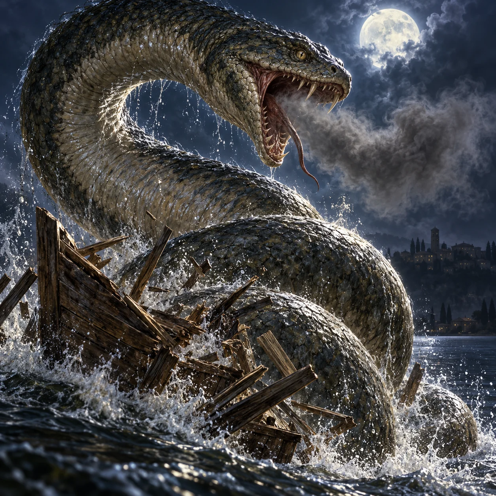
Living serpentine dragon following the documented biscione emblem; no graphic feeding
Aura: Kesan kuat berasal dari rise from lake gerundo and smash an empty wooden boat beneath a muscular coil (tarantasio-c02,tarantasio-c03).
Audit ciri dan sumber
- [object Object]
- [object Object]
- [object Object]
PNG asli: Uji Sangar 7/7 ya. Naga ular satu kepala tanpa kaki/sayap mendominasi, beraksi menghancurkan perahu kosong; napas kelabu tidak bercahaya sesuai c03. Anatomi biscione c08 terbaca. Tidak ada korban, gore, teks atau desain modern.
Review sumberONE original square premium painterly cinematic Mythics illustration of Tarantasio, the Lombard dragon of Lake Gerundo, depicted as the serpent-like biscione in the Visconti tale.
ANATOMY: one serpentine head, two eyes, continuous coiling limbless serpent body; no legs, wings or extra horns; no child victim [tarantasio-c08]
MOMENT: Rise from Lake Gerundo and smash an empty wooden boat beneath a muscular coil.
POWER: Foul nonluminous grey breath fouls the air; broken boat planks scatter from the physical attack [tarantasio-c02,tarantasio-c03]
SCALE & CAMERA: extreme low angle; close dramatic foreshortening; subject fills almost the entire square frame, distinguishable anatomy immediately readable; no invented giant size.
LIGHT & WEATHER: one dominant moonlight source, strong rim light, deep walnut shadows and antique gold highlights, airborne spray or dust only where physical action causes it.
SURFACE: tactile rough fur, feather, scale, fabric or wet skin appropriate to the stated anatomy; strong painterly material detail, never plastic.
SETTING: Lake Gerundo in Lombardy [tarantasio-c01]
MOOD: dangerous and imposing or respectfully awe-inspiring for sacred beings; decisive action, never cute, calm or decorative.
HARD CONSTRAINTS: no text, lettering, logo, border, frame or watermark; no extra heads, limbs or fingers; no design borrowed from film, game, anime or comic; no nudity or explicit gore; no generic glow aura, neon outline, energy ribbons or floating runes. Output one square PNG at least 1024x1024.
Tigmamanukan
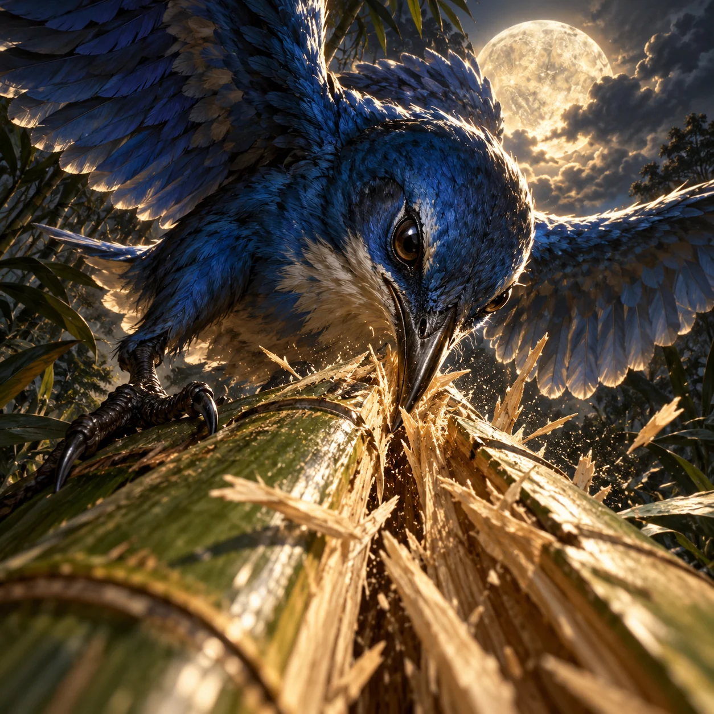
Respectful creation action; small size preserved by macro composition
Aura: Kesan kuat berasal dari strike the thick primordial bamboo with its beak as the bamboo splits toward the viewer (tigmamanukan-c13,tigmamanukan-c18).
Audit ciri dan sumber
- [object Object]
- [object Object]
- [object Object]
PNG asli diperiksa: Uji Sangar 7/7 ya. Burung biru dominan mematuk bambu yang sedang terbelah, paruh dan mata tegas terbaca pada thumbnail. Dua sayap dan kaki burung konsisten, kaki jauh terhalang badan/bambu. Serpihan merupakan aksi c13/c18 tanpa aura. Framing makro menjaga ukuran tanpa pembanding manusia.
Review sumberONE original square premium painterly cinematic Mythics illustration of Tigmamanukan, the revered blue augural bird sent by Bathala that opened primordial bamboo.
ANATOMY: one blue bird, thrush-sized, one head, two eyes, two feathered wings, two bird legs, pointed natural beak; no horns [tigmamanukan-c09,tigmamanukan-c17]
MOMENT: Strike the thick primordial bamboo with its beak as the bamboo splits toward the viewer.
POWER: A physical split in the bamboo caused by its beak; wood fibres and splinters visible, no magical light [tigmamanukan-c13,tigmamanukan-c18]
SCALE & CAMERA: extreme low angle; close dramatic foreshortening; subject fills almost the entire square frame, distinguishable anatomy immediately readable; no invented giant size.
LIGHT & WEATHER: one dominant moonlight source, strong rim light, deep walnut shadows and antique gold highlights, airborne spray or dust only where physical action causes it.
SURFACE: tactile rough fur, feather, scale, fabric or wet skin appropriate to the stated anatomy; strong painterly material detail, never plastic.
SETTING: close to the primordial bamboo of the creation tale, surrounding dark vegetation [tigmamanukan-c13]
MOOD: dangerous and imposing or respectfully awe-inspiring for sacred beings; decisive action, never cute, calm or decorative.
HARD CONSTRAINTS: no text, lettering, logo, border, frame or watermark; no extra heads, limbs or fingers; no design borrowed from film, game, anime or comic; no nudity or explicit gore; no generic glow aura, neon outline, energy ribbons or floating runes. Output one square PNG at least 1024x1024.
Tiyanak
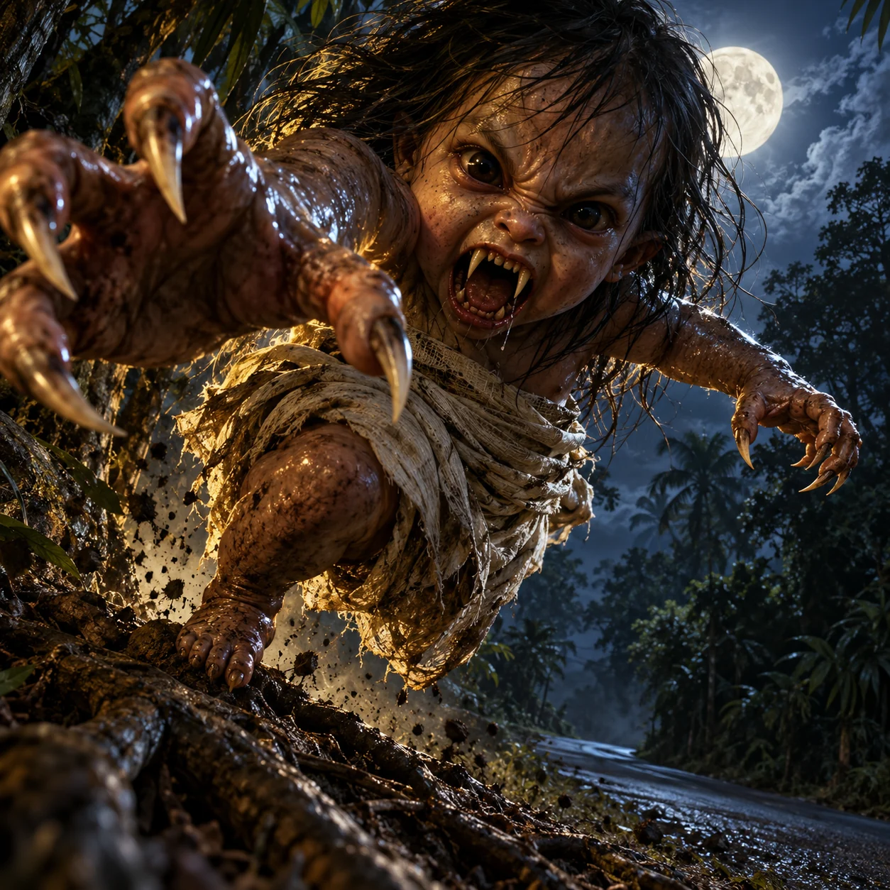
One baby-shaped fang-and-claw variant only; cloth is editorial coverage
Aura: Kesan kuat berasal dari lunge off a roadside root directly toward the viewer, clawed hand enlarged by close perspective and fang-filled mouth opening (tiyanak-c04).
Audit ciri dan sumber
- [object Object]
- [object Object]
- [object Object]
PNG asli: Uji Sangar 7/7 ya. Sosok kecil infantil menerjang dengan dua tangan bercakar dan taring, bukan anak biasa. Kepala/mata/dua lengan/dua kaki sesuai; kaki belakang terhalang kain dan badan. Kain buram menutup tubuh, tanpa korban atau gore. Efek hanya tanah/debu dari lompatan.
Review sumberONE original square premium painterly cinematic Mythics illustration of Tiyanak, the Philippine vampiric creature retaining an infantlike shape with fangs and claws.
ANATOMY: one infantlike monstrous head, two eyes, two arms, two legs; unmistakable sharp fangs and claws; full opaque weathered cloth wrap covering torso and lower body [tiyanak-c01,tiyanak-c04]
MOMENT: Lunge off a roadside root directly toward the viewer, clawed hand enlarged by close perspective and fang-filled mouth opening.
POWER: No visible supernatural power; attacking anatomy and close framing only [tiyanak-c04]
SCALE & CAMERA: extreme low angle; close dramatic foreshortening; subject fills almost the entire square frame, distinguishable anatomy immediately readable; no invented giant size.
LIGHT & WEATHER: one dominant moonlight source, strong rim light, deep walnut shadows and antique gold highlights, airborne spray or dust only where physical action causes it.
SURFACE: tactile rough fur, feather, scale, fabric or wet skin appropriate to the stated anatomy; strong painterly material detail, never plastic.
SETTING: a dark jungle roadside where its crying lures travelers [tiyanak-c01,tiyanak-c38]
MOOD: dangerous and imposing or respectfully awe-inspiring for sacred beings; decisive action, never cute, calm or decorative.
HARD CONSTRAINTS: no text, lettering, logo, border, frame or watermark; no extra heads, limbs or fingers; no design borrowed from film, game, anime or comic; no nudity or explicit gore; no generic glow aura, neon outline, energy ribbons or floating runes. Output one square PNG at least 1024x1024.
Wakwak
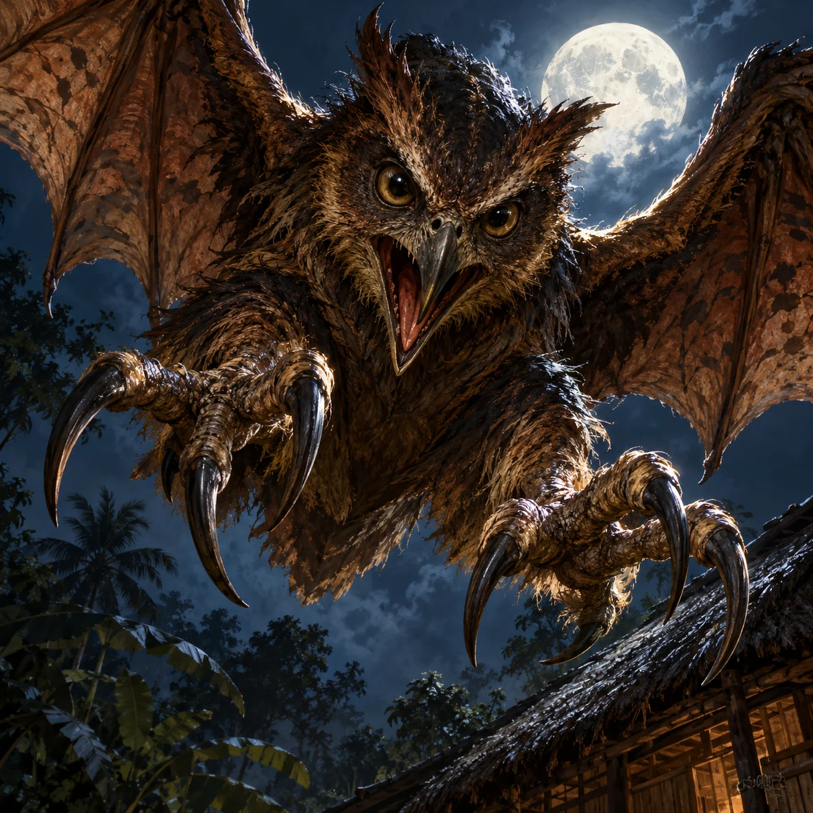
Bat-winged birdlike variant, avoiding other incompatible regional forms
Aura: Kesan kuat berasal dari swoop down at the viewer with both long talons extended and wings beating hard (wakwak-c01,wakwak-c02,wakwak-c03).
Audit ciri dan sumber
- [object Object]
- [object Object]
- [object Object]
PNG asli: Uji Sangar 7/7 ya. Makhluk birdlike bersayap membran dua dan dua kaki bercakar panjang menerjang kamera di atas atap. Satu kepala, dua mata, badan utuh, tanpa torso terpisah. Terbaca sebagai pemburu gaib, tanpa efek kuasa, aura, korban/gore atau teks.
Review sumberONE original square premium painterly cinematic Mythics illustration of Wakwak, a Philippine predatory night-flying birdlike creature.
ANATOMY: one birdlike head, two eyes, one intact body, exactly two batlike membranous wings, two feet ending in long sharp talons; no human torso, no detached body [wakwak-c01,wakwak-c03]
MOMENT: Swoop down at the viewer with both long talons extended and wings beating hard.
POWER: No magical energy; nocturnal hunting flight and threatening talons only [wakwak-c01,wakwak-c02,wakwak-c03]
SCALE & CAMERA: extreme low angle; close dramatic foreshortening; subject fills almost the entire square frame, distinguishable anatomy immediately readable; no invented giant size.
LIGHT & WEATHER: one dominant moonlight source, strong rim light, deep walnut shadows and antique gold highlights, airborne spray or dust only where physical action causes it.
SURFACE: tactile rough fur, feather, scale, fabric or wet skin appropriate to the stated anatomy; strong painterly material detail, never plastic.
SETTING: above a rural Philippine roof at night [wakwak-c01,wakwak-c18]
MOOD: dangerous and imposing or respectfully awe-inspiring for sacred beings; decisive action, never cute, calm or decorative.
HARD CONSTRAINTS: no text, lettering, logo, border, frame or watermark; no extra heads, limbs or fingers; no design borrowed from film, game, anime or comic; no nudity or explicit gore; no generic glow aura, neon outline, energy ribbons or floating runes. Output one square PNG at least 1024x1024.
Winged cat
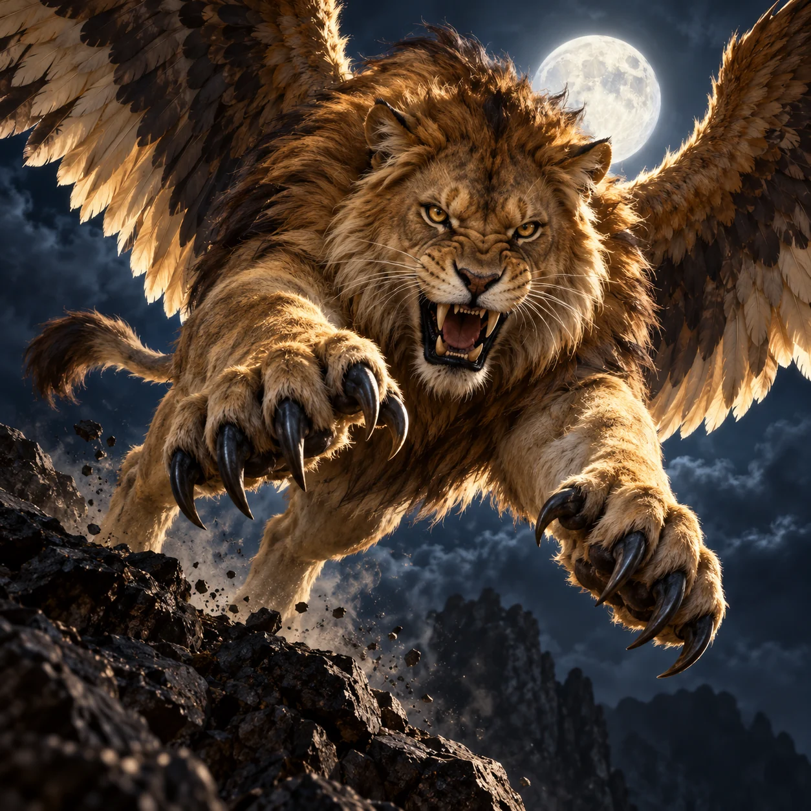
Big-cat eagle-wing variant; rocky setting is editorial rather than researched geography
Aura: Kesan kuat berasal dari launch from a dark rocky ledge toward the viewer, clawed forepaws thrust forward, broad feathered wings flaring (winged-cat-c01).
Audit ciri dan sumber
- [object Object]
- [object Object]
- [object Object]
PNG asli: Uji Sangar 7/7 ya. Singa bersayap elang melompat dari batu, wajah menggeram dan cakar terbaca. Satu kepala dua mata, empat kaki, dua sayap dan ekor tunggal. Tanpa efek gaib terdokumentasi; debu akibat lompatan biasa. Tidak tampak hewan biasa atau maskot; tanpa teks/gore.
Review sumberONE original square premium painterly cinematic Mythics illustration of Winged Cat, a legendary feline shown here in the eagle-winged big-cat form.
ANATOMY: one lionlike feline head, two eyes, four feline legs, one tail, exactly two eagle wings; strong visible feline jaws and hooked claws [winged-cat-c01,winged-cat-c02]
MOMENT: Launch from a dark rocky ledge toward the viewer, clawed forepaws thrust forward, broad feathered wings flaring.
POWER: No documented supernatural power; no power effects, motion and feline anatomy only [winged-cat-c01]
SCALE & CAMERA: extreme low angle; close dramatic foreshortening; subject fills almost the entire square frame, distinguishable anatomy immediately readable; no invented giant size.
LIGHT & WEATHER: one dominant moonlight source, strong rim light, deep walnut shadows and antique gold highlights, airborne spray or dust only where physical action causes it.
SURFACE: tactile rough fur, feather, scale, fabric or wet skin appropriate to the stated anatomy; strong painterly material detail, never plastic.
SETTING: an editorial unmarked rocky ledge in near darkness; no asserted historical location [winged-cat-c01]
MOOD: dangerous and imposing or respectfully awe-inspiring for sacred beings; decisive action, never cute, calm or decorative.
HARD CONSTRAINTS: no text, lettering, logo, border, frame or watermark; no extra heads, limbs or fingers; no design borrowed from film, game, anime or comic; no nudity or explicit gore; no generic glow aura, neon outline, energy ribbons or floating runes. Output one square PNG at least 1024x1024.
Zennyo Ryūō
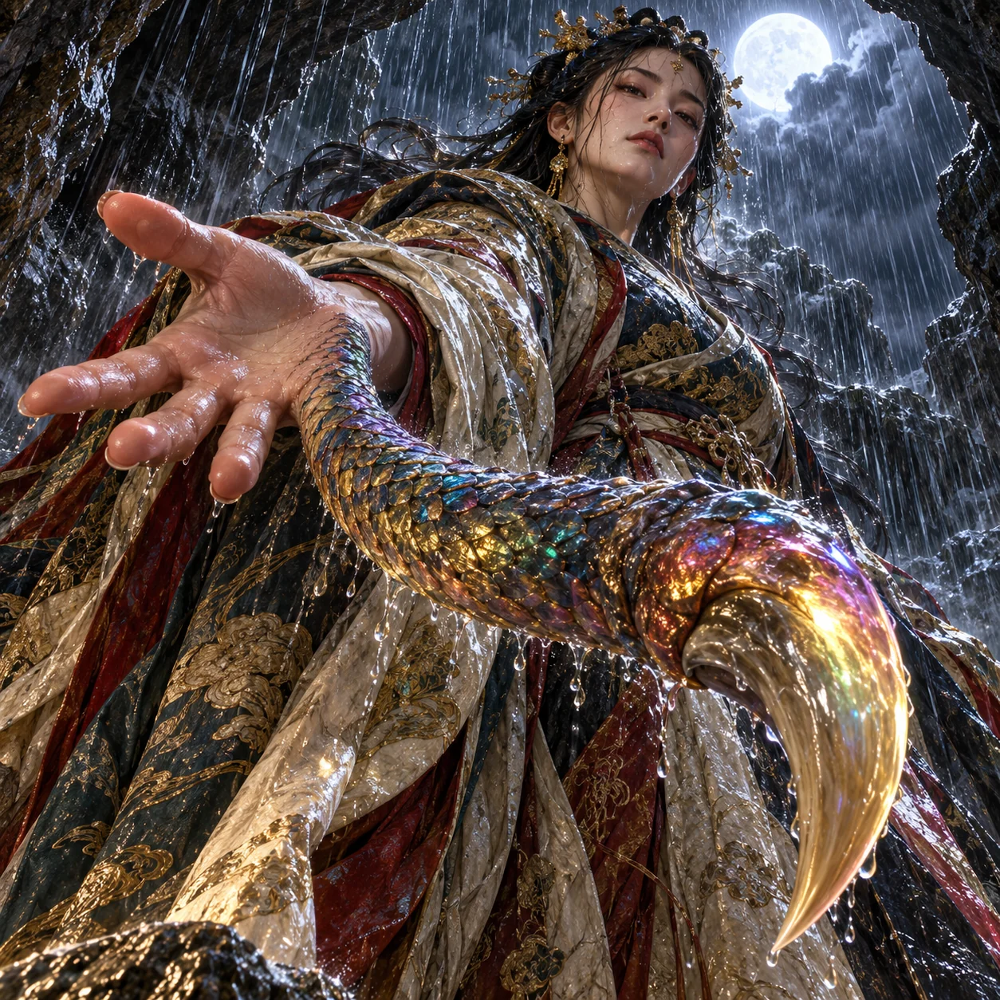
Respectful sacred woman manifestation; claw size is sourced, human scale preserved
Aura: Kesan kuat berasal dari extend her immense little-finger claw downward across the foreground as heavy rain pours around her (zennyo-ryuo-c11,zennyo-ryuo-c13).
Audit ciri dan sumber
- [object Object]
- [object Object]
- [object Object]
PNG asli: Uji Sangar 7/7 ya. Empat jari biasa terlihat terpisah; kelingking luar menjadi jari naga panjang dengan cakar besar, sambungan ke telapak jelas tanpa senjata. Cakar lima warna dan hujan c11/c13 memberi keagungan. Dua lengan, kepala tunggal dan tubuh berpakaian buram. Tidak ada teks atau aura generik.
Review sumberONE original square premium painterly cinematic Mythics illustration of Zennyo Ryūō, the revered Japanese rain dragon deity in the woman manifestation encountered by Keien.
ANATOMY: one dignified woman's head, two eyes, two arms, two legs under full opaque Japanese layered robes; her right hand is shown in clear side profile with palm facing upward; thumb, index, middle and ring fingers are FOUR separate small ordinary fingers held loosely out of the way; the OUTERMOST FIFTH DIGIT, HER LITTLE FINGER, transforms into a continuous three-metre-long dragon finger ending in a huge hooked nail; the giant finger is living scaled flesh CONNECTED ANATOMICALLY TO THE OUTSIDE EDGE OF HER PALM, not an object held in the hand, no extra fingers, no dragon body [zennyo-ryuo-c10,zennyo-ryuo-c11]
MOMENT: Reach an OPEN PALM toward the viewer; the long outermost little finger is a living scaled dragon digit extending from the palm and curving across the foreground, its huge claw at the tip; do not grip anything, no weapons, no blade, no handle, no sickle; show the anatomical connection and all four normal digits separately; heavy rain pounds the cave entrance.
POWER: Heavy rain falls across the scene; the documented immense claw casts restrained five-coloured light physically onto the wet robes and rocks [zennyo-ryuo-c11,zennyo-ryuo-c13]
SCALE & CAMERA: extreme low angle; close dramatic foreshortening; subject fills almost the entire square frame, distinguishable anatomy immediately readable; no invented giant size.
LIGHT & WEATHER: one dominant moonlight source, strong rim light, deep walnut shadows and antique gold highlights, airborne spray or dust only where physical action causes it.
SURFACE: tactile rough fur, feather, scale, fabric or wet skin appropriate to the stated anatomy; strong painterly material detail, never plastic.
SETTING: the dragon cave on Mount Murō, its rocky entrance and rain-filled darkness [zennyo-ryuo-c09]
MOOD: dangerous and imposing or respectfully awe-inspiring for sacred beings; decisive action, never cute, calm or decorative.
HARD CONSTRAINTS: no text, lettering, logo, border, frame or watermark; no extra heads, limbs or fingers; no design borrowed from film, game, anime or comic; no nudity or explicit gore; no generic glow aura, neon outline, energy ribbons or floating runes. Output one square PNG at least 1024x1024.
Balāha
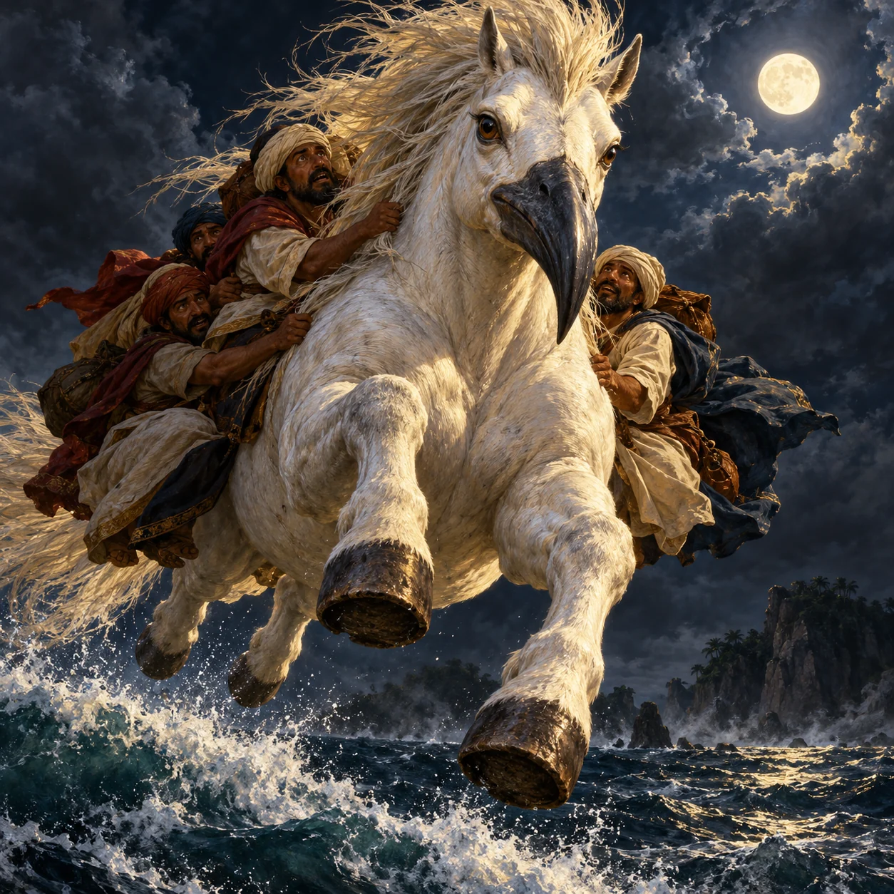
Faithful Jataka crow-beaked white horse, benevolent rather than monstrous
Aura: Kesan kuat berasal dari fly toward the viewer above a churning sea carrying rescued merchants safely against its white flanks (balaha-c04,balaha-c06,balaha-c09).
Audit ciri dan sumber
- [object Object]
- [object Object]
- [object Object]
PNG asli: Uji Sangar 7/7 ya. Kuda putih dengan paruh gagak, surai kasar dan empat kaki tampak terbang tanpa sayap; pedagang berpakaian buram berpegangan di kedua sisi. Subjek dominan dan megah serta aksi penyelamatan jelas. Cipratan laut biasa, bukan kendali ombak. Tiada teks, gore, atau desain film.
Review sumberONE original square premium painterly cinematic Mythics illustration of Balāha, the merciful flying horse bodhisattva rescuing merchants in the Valahassa Jataka.
ANATOMY: one crow-beaked horse head, two eyes, white horse body, exactly four legs, one horse tail, coarse pale mane like munja grass; no wings, no horns; several fully clothed merchants cling to its flanks [balaha-c04,balaha-c06]
MOMENT: Fly toward the viewer above a churning sea carrying rescued merchants safely against its white flanks.
POWER: Unwinged supernatural flight only; ordinary sea spray below, no control of ocean or lightning [balaha-c04,balaha-c06,balaha-c09]
SCALE & CAMERA: extreme low angle; close dramatic foreshortening; subject fills almost the entire square frame, distinguishable anatomy immediately readable; no invented giant size.
LIGHT & WEATHER: one dominant moonlight source, strong rim light, deep walnut shadows and antique gold highlights, airborne spray or dust only where physical action causes it.
SURFACE: tactile rough fur, feather, scale, fabric or wet skin appropriate to the stated anatomy; strong painterly material detail, never plastic.
SETTING: the sea beside the island of Ceylon during the rescue [balaha-c04,balaha-c07]
MOOD: dangerous and imposing or respectfully awe-inspiring for sacred beings; decisive action, never cute, calm or decorative.
HARD CONSTRAINTS: no text, lettering, logo, border, frame or watermark; no extra heads, limbs or fingers; no design borrowed from film, game, anime or comic; no nudity or explicit gore; no generic glow aura, neon outline, energy ribbons or floating runes. Output one square PNG at least 1024x1024.
Champ
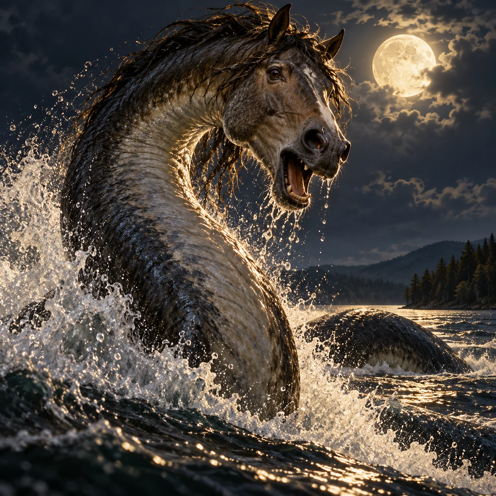
Horse-headed approximately twenty-foot variant; realistic body disturbance only
Aura: Kesan kuat berasal dari rear up very close to the viewer out of the dark lake, serpentine neck curved and horse jaws parted (champ-folklore-c14).
Audit ciri dan sumber
- [object Object]
- [object Object]
- [object Object]
PNG asli: Uji Sangar 7/7 ya. Kepala kuda menatap dekat di atas leher/tubuh ular yang keluar dari danau. Satu kepala dua mata tanpa sayap/kaki/tanduk. Ombak kecil dan cipratan akibat kemunculan, tanpa kuasa tambahan. Dominasinya dan keganjilan tubuh terbaca pada thumbnail; tanpa teks atau gore.
Review sumberONE original square premium painterly cinematic Mythics illustration of Champ, the horse-headed lake serpent of Lake Champlain folklore.
ANATOMY: one recognizably horse-shaped head, two eyes, elongated approximately twenty-foot sea-serpent body; no legs, wings, horns, dragon face or glowing eyes [champ-folklore-c14]
MOMENT: Rear up very close to the viewer out of the dark lake, serpentine neck curved and horse jaws parted.
POWER: No supernatural power; splashes caused only by its body emerging [champ-folklore-c14]
SCALE & CAMERA: extreme low angle; close dramatic foreshortening; subject fills almost the entire square frame, distinguishable anatomy immediately readable; no invented giant size.
LIGHT & WEATHER: one dominant moonlight source, strong rim light, deep walnut shadows and antique gold highlights, airborne spray or dust only where physical action causes it.
SURFACE: tactile rough fur, feather, scale, fabric or wet skin appropriate to the stated anatomy; strong painterly material detail, never plastic.
SETTING: Lake Champlain, distant wooded shore [champ-folklore-c05]
MOOD: dangerous and imposing or respectfully awe-inspiring for sacred beings; decisive action, never cute, calm or decorative.
HARD CONSTRAINTS: no text, lettering, logo, border, frame or watermark; no extra heads, limbs or fingers; no design borrowed from film, game, anime or comic; no nudity or explicit gore; no generic glow aura, neon outline, energy ribbons or floating runes. Output one square PNG at least 1024x1024.
Guhuoniao
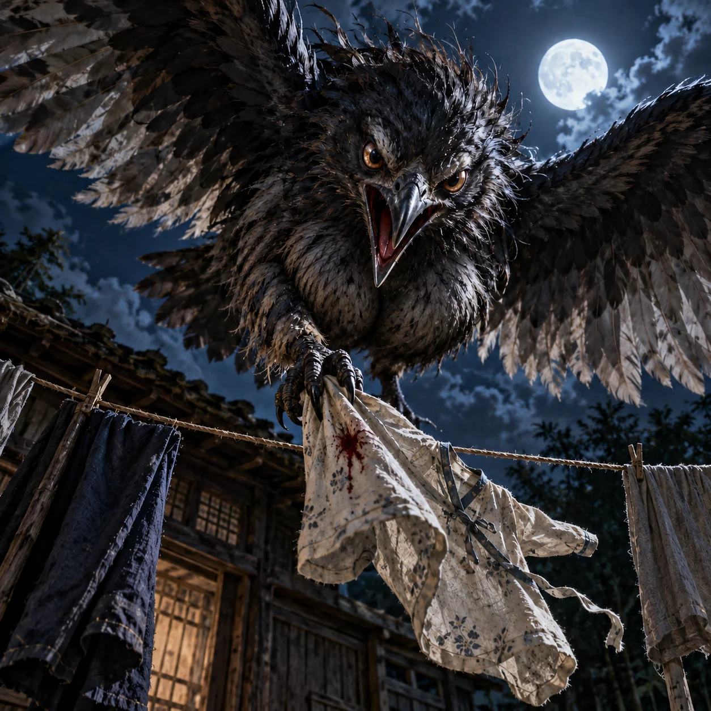
Wujud burung malam betina dengan dua tonjolan dada tertutup bulu penuh sesuai Bencao Gangmu.
Aura: Ancaman burung malam yang menandai pakaian anak hingga menyebabkan penyakit (guhuoniao-c07).
Audit ciri dan sumber
- [object Object]
- [object Object]
- [object Object]
PNG asli: Uji Sangar 7/7 ya. Burung roh menyambar pakaian kosong bernoda kecil; dada kini mempunyai dua lobus simetris tertutup bulu buram, tanpa ketelanjangan. Satu kepala dua mata dua sayap dua kaki konsisten, kaki jauh terhalang badan. Aksi c07 terbaca, tanpa korban/gore, teks, bingkai atau aura.
Review sumberONE original square premium painterly cinematic Mythics illustration of Guhuoniao, the female night-flying spirit bird of Chinese folklore.
ANATOMY: one fully feathered female spirit BIRD, one bird head with a pointed natural beak, exactly two eyes, two large feathered wings and two bird legs; the chest has two rounded breast-like swellings entirely concealed under thick opaque plumage as documented in the Bencao Gangmu; no nude skin, no human body, no humanoid face, no bat wings, no extra limbs. [guhuoniao-c06,guhuoniao-c08,guhuoniao-c09]
MOMENT: dive sharply directly toward the viewer and snatch an EMPTY SMALL CHILD GARMENT from an exterior clothesline; open beak and intense watchful eyes fill the upper half, wings rake across the whole frame; claws close over the fabric, feathers and cloth whip violently.
POWER: leave a SMALL dark blood stain on the EMPTY hanging cloth as in the night-flight illness tale; no child, no victim, no gore, no soul beams or magical glow. [guhuoniao-c07]
SCALE & CAMERA: extreme low angle close-up, entire creature dominates, no invented giant size.
LIGHT & WEATHER: one hard moonlight source, deep shadows, strong rim light, physical fabric motion only.
SURFACE: dense ragged dark bird feathers, wet beak and natural claws, coarse weathered cloth, no plastic.
SETTING: outside a Jingzhou wooden dwelling at night beside its clothesline. [guhuoniao-c07,guhuoniao-c11]
MOOD: uncanny threatening nocturnal spirit, predatory action and fierce gaze, not decorative, ordinary bird, calm or cute.
HARD CONSTRAINTS: no text, lettering, logo, border, frame or watermark; no extra heads or limbs; no borrowed film/game/anime design; no nudity or explicit gore; no generic glow aura, neon outline or energy ribbons. One square PNG at least 1024x1024.
TARGETED EDIT OF REFERENCED IMAGE: Preserve the same single spirit bird diving with the same two wings, one head and two feet, the empty stained garment, the moonlit house, and the dramatic gaze. Change ONLY the chest silhouette: directly below the neck, make TWO DISTINCT PROMINENT ROUNDED BREAST-SHAPED CHEST LOBES, symmetrically side by side, as the Bencao Gangmu explicitly describes this female spirit bird. Both lobes must be COMPLETELY COVERED IN DENSE OPAQUE DARK FEATHERS with NO exposed skin, NO nipples and NO nudity. They must be unmistakably readable at thumbnail size while remaining a bird chest. Avoid humanoid torso or extra arms. Keep all other features and menace.
Headless Horseman
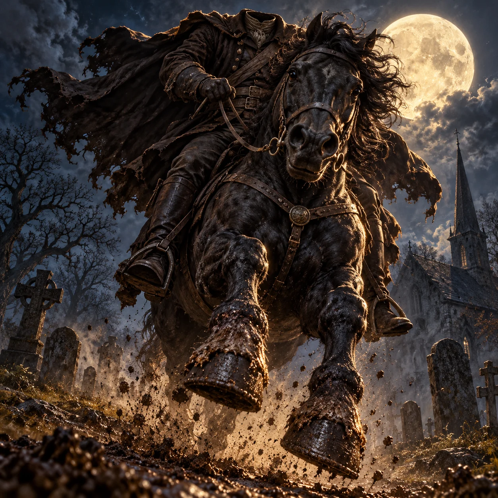
Irving textual head-seeking horseman; no fire pumpkin, film sword or invented lightning
Aura: Kesan kuat berasal dari gallop directly at the viewer from the churchyard, horse front hooves lifted and rider gripping reins (headless-horseman-c20).
Audit ciri dan sumber
- [object Object]
- [object Object]
- [object Object]
PNG asli: Uji Sangar 7/7 ya. Penunggang tanpa kepala dan kuda sedang menggallop keluar kuburan langsung ke kamera; neckline kering tertutup kain tanpa darah. Dua lengan/dua kaki penunggang konsisten, lengan jauh di balik leher kuda; empat kaki kuda konsisten dengan belakang terhalang. Tanpa labu, pedang film, aura, api, teks atau gore.
Review sumberONE original square premium painterly cinematic Mythics illustration of Headless Horseman, the headless Hessian apparition riding at night through Sleepy Hollow.
ANATOMY: one fully clothed headless rider with exactly two arms and two legs, closed dry cloth neckline with no gore, no head carried and no pumpkin; one horse with one head, two eyes and four legs [headless-horseman-c02,headless-horseman-c19]
MOMENT: Gallop directly at the viewer from the churchyard, horse front hooves lifted and rider gripping reins.
POWER: No power effects; speed throws ordinary dust and damp earth from hooves [headless-horseman-c20]
SCALE & CAMERA: extreme low angle; close dramatic foreshortening; subject fills almost the entire square frame, distinguishable anatomy immediately readable; no invented giant size.
LIGHT & WEATHER: one dominant moonlight source, strong rim light, deep walnut shadows and antique gold highlights, airborne spray or dust only where physical action causes it.
SURFACE: tactile rough fur, feather, scale, fabric or wet skin appropriate to the stated anatomy; strong painterly material detail, never plastic.
SETTING: Sleepy Hollow churchyard with graves and distant shadowed trees [headless-horseman-c20,headless-horseman-c22]
MOOD: dangerous and imposing or respectfully awe-inspiring for sacred beings; decisive action, never cute, calm or decorative.
HARD CONSTRAINTS: no text, lettering, logo, border, frame or watermark; no extra heads, limbs or fingers; no design borrowed from film, game, anime or comic; no nudity or explicit gore; no generic glow aura, neon outline, energy ribbons or floating runes. Output one square PNG at least 1024x1024.
Imbunche
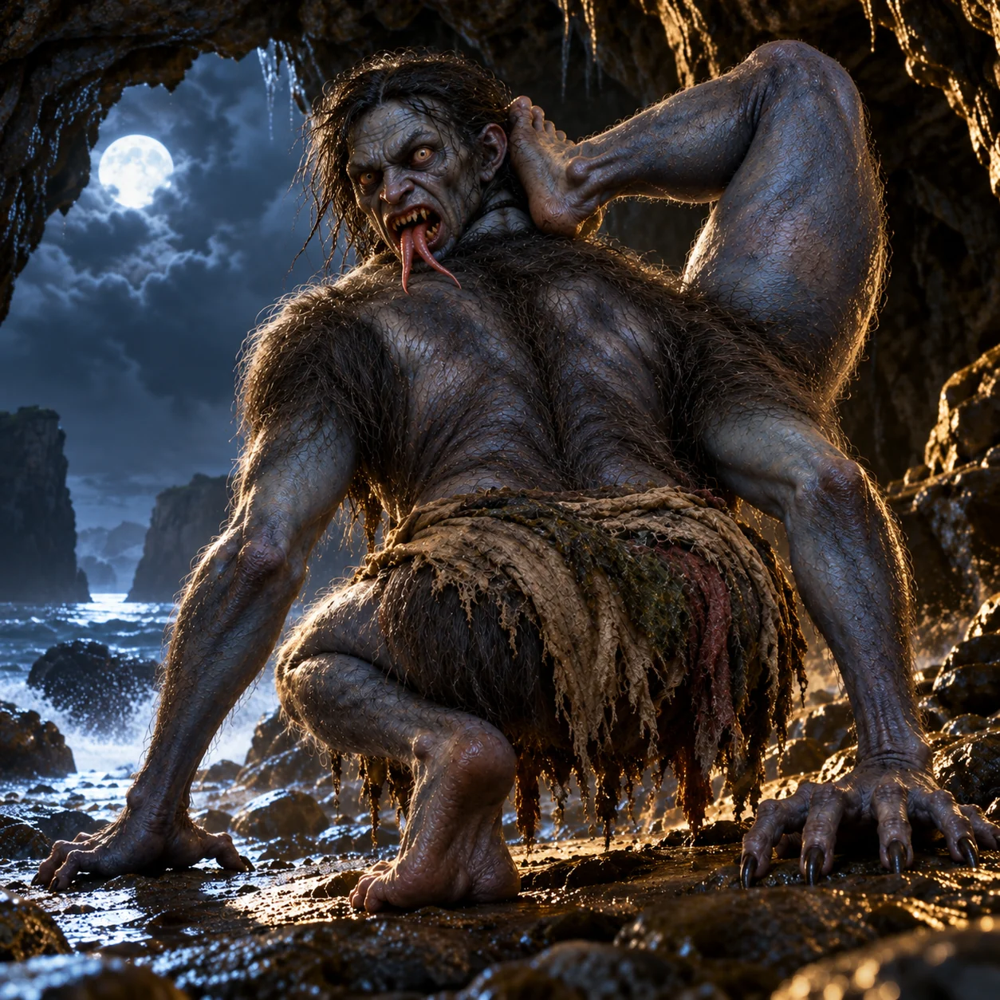
Backward head and one bound leg must be explicitly legible; no depicted injury ritual
Aura: Kesan kuat berasal dari scramble out of the cave on two hands and one foot, with back toward the camera but backwards-twisted face confronting the viewer; the right foot clearly ends behind its neck (imbunche-c05).
Audit ciri dan sumber
- [object Object]
- [object Object]
- [object Object]
PNG asli: Uji Sangar 7/7 ya. Punggung dengan tulang belikat menghadap kamera, kepala terputar balik memandang penonton dengan dua mata, taring dan lidah bercabang jelas. Dua tangan dan kaki kiri menopang; kaki kanan naik dari panggul sisi kanan rear-view, kaki berakhir di belakang leher. Kulit biru rambut punggung dan kain buram konsisten. Tiada efek sihir, teks atau gore.
Review sumberONE original square premium painterly cinematic Mythics illustration of Imbunche, the deformed blue-skinned hairy guardian of the warlock cave in Chilote folklore.
ANATOMY: one backwards-facing twisted head, two eyes, sharp teeth and forked tongue; exactly two twisted arms with hands on ground, one supporting left leg, the right leg bent over its back and attached behind the neck; blue skin and thick back hair; opaque ragged waist covering [imbunche-c02,imbunche-c04,imbunche-c06]
MOMENT: REAR THREE-QUARTER VIEW: the creature crouches FACING AWAY from the camera toward the cave. Its broad hairy BACK AND DISTINCT SHOULDER BLADES face the viewer, no chest or belly facing camera. Its human head is twisted a full 180 DEGREES BACKWARD so its face looks BACK OVER ITS OWN SPINE directly at the viewer. Show the neck twist explicitly between the shoulder blades. Two hands and its left foot support the body. The RIGHT THIGH starts at its hip and bends upward across the furry back, the right shin runs up its spine, and the right FOOT ENDS ATTACHED BEHIND THE NECK beside the backwards face. No extra feet, no normal head orientation, no front-facing torso. The creature growls and braces to turn its body toward the viewer.
POWER: No visible magic; claws scrape wet stone and its mouth opens in a guttural warning [imbunche-c05]
SCALE & CAMERA: extreme low angle; close dramatic foreshortening; subject fills almost the entire square frame, distinguishable anatomy immediately readable; no invented giant size.
LIGHT & WEATHER: one dominant moonlight source, strong rim light, deep walnut shadows and antique gold highlights, airborne spray or dust only where physical action causes it.
SURFACE: tactile rough fur, feather, scale, fabric or wet skin appropriate to the stated anatomy; strong painterly material detail, never plastic.
SETTING: the Cueva de Quicavi warlock cave entrance on Chiloe [imbunche-c01,imbunche-c19]
MOOD: dangerous and imposing or respectfully awe-inspiring for sacred beings; decisive action, never cute, calm or decorative.
HARD CONSTRAINTS: no text, lettering, logo, border, frame or watermark; no extra heads, limbs or fingers; no design borrowed from film, game, anime or comic; no nudity or explicit gore; no generic glow aura, neon outline, energy ribbons or floating runes. Output one square PNG at least 1024x1024.
TARGETED ANATOMY EDIT OF REFERENCE: Keep the creature with BACK facing the viewer and both hands plus one foot on ground. MIRROR the whole body arrangement horizontally so the raised bound leg is the creatures anatomical RIGHT LEG, on the RIGHT side of a rear view; the supporting left leg is on the left. Then rotate ONLY the head a full 180 degrees so the FACE LOOKS STRAIGHT BACK AT THE VIEWER, centered between shoulder blades, with TWO EYES FULLY VISIBLE and no side profile. The chest must still face away. Show the twisted neck continuously joined to the body and one foot attached behind that neck. Keep exactly two arms, two legs, one head; keep blue skin, sharp teeth, forked tongue, hairy back, opaque loincloth and the cave. No gore or injury depiction. Head-on face on a back-facing body is the crucial identity.
Lembuswana
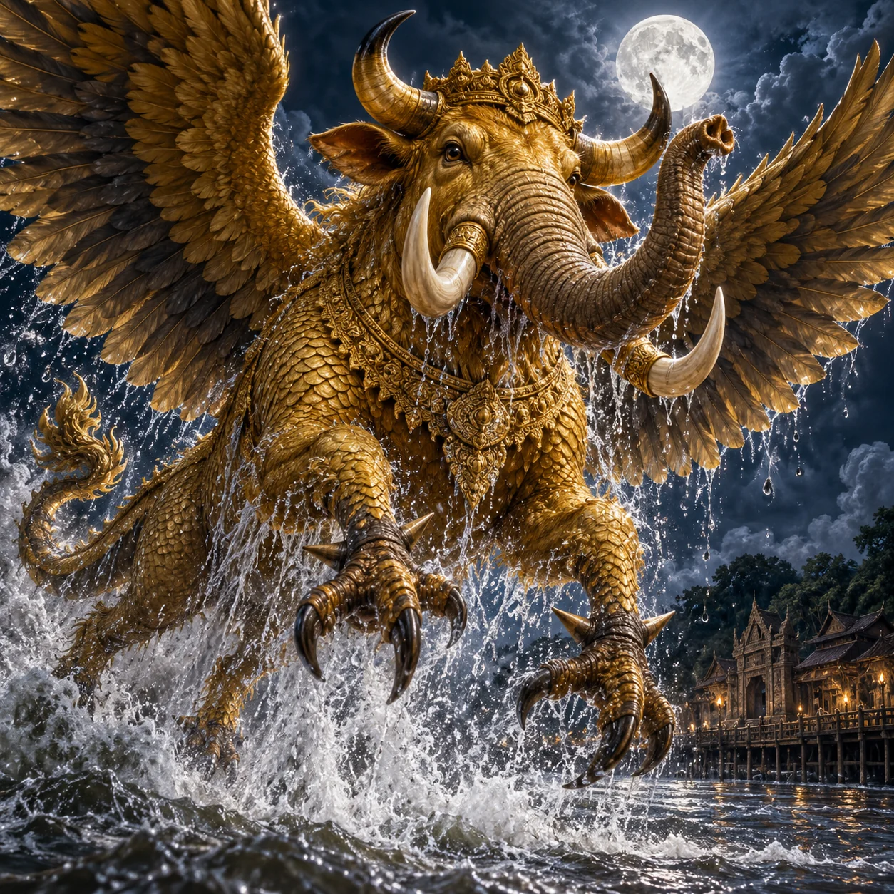
Living sacred guardian rather than statue; golden bull variant of c02, respectful strength
Aura: Kesan kuat berasal dari surge out from the mahakam river toward the viewer and spread its wings to begin taking flight, trunk lifted and foreclaws reaching forward (lembuswana-c09,lembuswana-c26,lembuswana-c27).
Audit ciri dan sumber
- [object Object]
- [object Object]
- [object Object]
PNG asli: Uji Sangar 7/7 ya. Makhluk hidup emas muncul dari sungai dan membuka sayap; kepala banteng bermahkota, belalai tunggal, dua gading dan sayap garuda dua jelas. Empat kaki konsisten, kaki belakang terhalang spray, cakar/taji, sisik dan ekor naga terbaca. Kesan sakral megah, bukan patung/hewan biasa. Cipratan karena kemunculan c09/c27, tanpa petir, aura, teks atau gore.
Review sumberONE original square premium painterly cinematic Mythics illustration of Lembuswana, the sacred golden Kutai guardian beast of the Mahakam River.
ANATOMY: one crowned bull head, two eyes, one elephant trunk, two elephant tusks, golden bull body covered in dragon scales, four rooster-clawed legs with clear spurs, one dragonlike tail, exactly two garuda feathered wings [lembuswana-c02]
MOMENT: Surge out from the Mahakam river toward the viewer and spread its wings to begin taking flight, trunk lifted and foreclaws reaching forward.
POWER: Water cascades from the body during emergence, documented ability to live in water and air and fly; no lightning generated [lembuswana-c09,lembuswana-c26,lembuswana-c27]
SCALE & CAMERA: extreme low angle; close dramatic foreshortening; subject fills almost the entire square frame, distinguishable anatomy immediately readable; no invented giant size.
LIGHT & WEATHER: one dominant moonlight source, strong rim light, deep walnut shadows and antique gold highlights, airborne spray or dust only where physical action causes it.
SURFACE: tactile rough fur, feather, scale, fabric or wet skin appropriate to the stated anatomy; strong painterly material detail, never plastic.
SETTING: Mahakam River at Tepian Batu, Kutai Lama [lembuswana-c03,lembuswana-c27]
MOOD: dangerous and imposing or respectfully awe-inspiring for sacred beings; decisive action, never cute, calm or decorative.
HARD CONSTRAINTS: no text, lettering, logo, border, frame or watermark; no extra heads, limbs or fingers; no design borrowed from film, game, anime or comic; no nudity or explicit gore; no generic glow aura, neon outline, energy ribbons or floating runes. Output one square PNG at least 1024x1024.
Meitei dragons
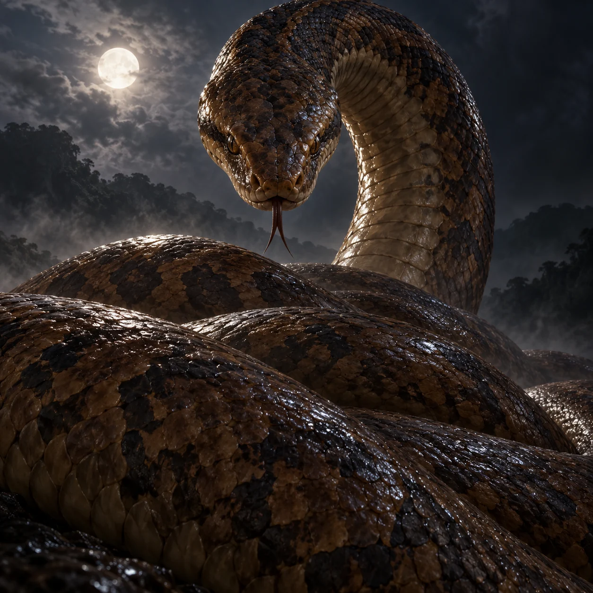
Pakhangba dalam wujud ular besar pada malam hari, bukan gabungan naga Meitei.
Aura: No visible magical effects; displeasure is expressed by the documented great-sized snake form [meitei-dragons-c13]
Audit ciri dan sumber
- [object Object]
- [object Object]
- [object Object]
PNG asli: ular besar satu kepala tanpa tungkai mendominasi, kepala menunduk dan lidah menjulur memberi momen konfrontasi. Uji Sangar 7/7; tanpa efek magis, tanpa teks atau gore.
Review sumberONE original square premium painterly cinematic Mythics illustration of Meitei dragons, as documented in the accepted traditional claims.
ANATOMY: Pakhangba in his documented serpentine dragon/snake form: one snake head, two eyes, one long limbless scaled body, no invented horns or wings [meitei-dragons-c06, meitei-dragons-c11, meitei-dragons-c13]
MOMENT: Rear toward the viewer out of tightly piled immense coils, lower the head in an overwhelming royal warning.
POWER: No visible magical effects; displeasure is expressed by the documented great-sized snake form [meitei-dragons-c13]
SCALE & CAMERA: extreme low angle, dominant close framing; subject fills the image and distinguishing anatomy is readable at 200 pixels.
LIGHT & WEATHER: one low moon beam, warm brown shadows, damp haze.
SURFACE: weathered wet walnut scales.
SETTING: Darkness of Manipur at night; minimal shadowed earth beneath the coils [meitei-dragons-c01, meitei-dragons-c03]
MOOD: dangerous or awe-inspiring, imposing active presence, never cute, neutral, decorative or calm.
HARD CONSTRAINTS: one square image, native resolution at least 1024x1024; no text, lettering, logo, border, frame or watermark; no extra heads, limbs or fingers; no borrowed film, game, anime or comic design; no nudity or explicit gore; no generic glow aura, neon outline, energy ribbons or floating symbols.
Rātoshikamuy
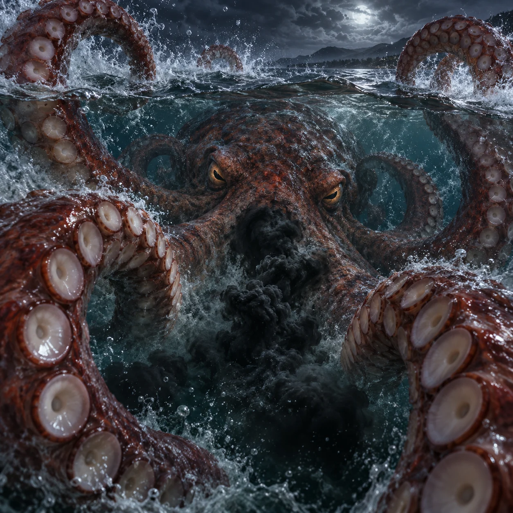
Gurita raksasa Rātoshikamuy dilihat melintasi permukaan air, kepala tetap terendam.
Aura: Black ink physically pours from the octopus mouth into the water; arms wrench up seawater [ratoshikamuy-c03, ratoshikamuy-c04]
Audit ciri dan sumber
- [object Object]
- [object Object]
- [object Object]
PNG asli: kepala dan dua mata gurita di bawah garis air, lengan bersucker melingkungi bingkai dengan tarikan aktif, tinta hitam menyebar nyata c03. Delapan lengan sebagian terendam dan terforeshortening; tanpa tambahan anggota, teks atau gore. Uji Sangar 7/7.
Review sumberONE original square premium painterly cinematic Mythics illustration of Rātoshikamuy, as documented in the accepted traditional claims.
ANATOMY: One immense octopus with one mantle/head, two eyes, exactly eight sucker-lined arms, no other appendages; head stays underwater [ratoshikamuy-c01, ratoshikamuy-c03, ratoshikamuy-c04]
MOMENT: Curl eight huge arms toward the viewer and pull backward with impossible force; confront us with angry eyes beneath the surface.
POWER: Black ink physically pours from the octopus mouth into the water; arms wrench up seawater [ratoshikamuy-c03, ratoshikamuy-c04]
SCALE & CAMERA: extreme low angle, dominant close framing; subject fills the image and distinguishing anatomy is readable at 200 pixels.
LIGHT & WEATHER: single dim moon shaft through turbid water, churning spray.
SURFACE: wet red-brown mottled flesh and tactile suckers.
SETTING: The sea at the mouth of the Ishikari River, a close split-level underwater view showing the head submerged [ratoshikamuy-c02]
MOOD: dangerous or awe-inspiring, imposing active presence, never cute, neutral, decorative or calm.
HARD CONSTRAINTS: one square image, native resolution at least 1024x1024; no text, lettering, logo, border, frame or watermark; no extra heads, limbs or fingers; no borrowed film, game, anime or comic design; no nudity or explicit gore; no generic glow aura, neon outline, energy ribbons or floating symbols.
Sundel Bolong
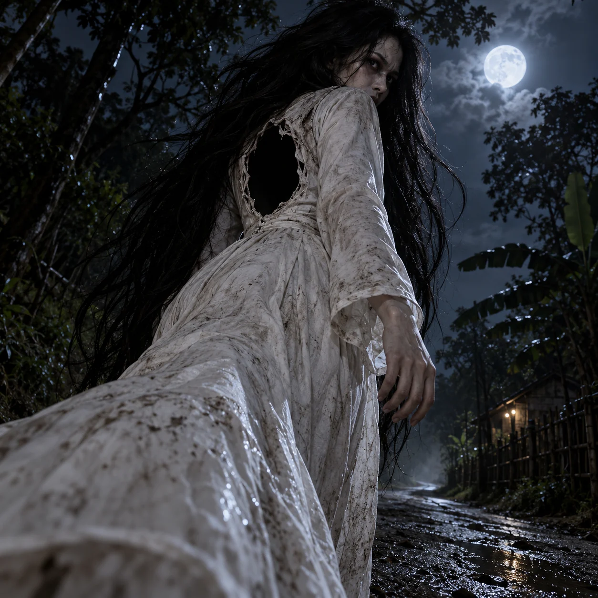
Hantu perempuan berambut panjang dengan lubang punggung tembus yang disederhanakan tanpa gore.
Aura: No power beams or environmental destruction; menace is from her documented vengeful haunting and impossible back opening [sundel-bolong-c05, sundel-bolong-c18]
Audit ciri dan sumber
- [object Object]
- [object Object]
- [object Object]
PNG asli: hantu mendominasi dari kamera rendah, berbalik menghakimi ke penonton dengan rambut dan gaun bergerak. Rongga punggung hitam besar terbaca jelas tanpa organ atau darah; satu kepala dan anatomi manusia tanpa tambahan. Uji Sangar 7/7.
Review sumberONE original square premium painterly cinematic Mythics illustration of Sundel Bolong, as documented in the accepted traditional claims.
ANATOMY: One adult female ghost, one head, two eyes, two arms and two legs, very long black hair, fully opaque long white dress. A large clean dark hole pierces the upper back through her body, readable as an empty opening, with zero blood or visible organs [sundel-bolong-c01, sundel-bolong-c03, sundel-bolong-c19]
MOMENT: Turn sharply toward the viewer while advancing along the lonely road, hair thrown aside enough to reveal the impossible dark back opening; look back over her shoulder with accusatory intensity.
POWER: No power beams or environmental destruction; menace is from her documented vengeful haunting and impossible back opening [sundel-bolong-c05, sundel-bolong-c18]
SCALE & CAMERA: extreme low angle, dominant close framing; subject fills the image and distinguishing anatomy is readable at 200 pixels.
LIGHT & WEATHER: single low moon beam, black tree shadows, damp night air.
SURFACE: weathered opaque white cloth, heavy black hair.
SETTING: A deserted Indonesian country road after dark [sundel-bolong-c16]
MOOD: dangerous or awe-inspiring, imposing active presence, never cute, neutral, decorative or calm.
HARD CONSTRAINTS: one square image, native resolution at least 1024x1024; no text, lettering, logo, border, frame or watermark; no extra heads, limbs or fingers; no borrowed film, game, anime or comic design; no nudity or explicit gore; no generic glow aura, neon outline, energy ribbons or floating symbols.
Ao Bing
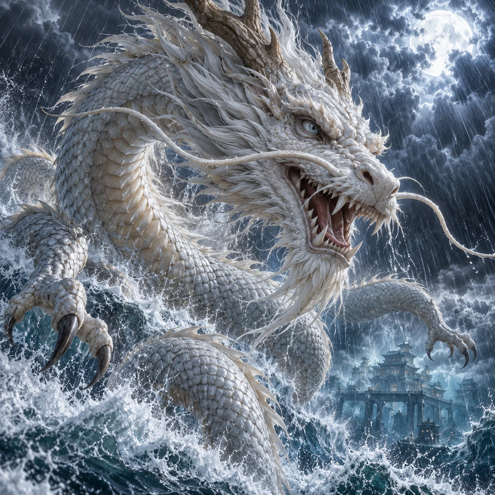
Ao Bing berwujud naga putih penguasa hujan di Laut Timur.
Aura: Dense rain and physical rain clouds pour over the sea, water splashes around his moving coils [ao-bing-c06, ao-bing-c14]
Audit ciri dan sumber
- [object Object]
- [object Object]
- [object Object]
PNG asli: naga putih satu kepala dominan, tubuh panjang dan tungkai konsisten sebagian tertutup gelombang; maju konfrontatif dalam hujan c06/c14. Crystal Palace menjadi latar kecil, naga tetap subjek. Uji Sangar 7/7; tanpa teks, gore, atau desain adaptasi modern.
Review sumberONE original square premium painterly cinematic Mythics illustration of Ao Bing, as documented in the accepted traditional claims.
ANATOMY: Ao Bing in his documented white dragon form, one dragon head, two eyes, one long sinuous white-scaled dragon body, four consistent limbs; no human form, no film costume, no borrowed modern design [ao-bing-c07, ao-bing-c12]
MOMENT: Drive forward from the East Sea with the dragon head dominating the foreground, coiling upward through heavy rain in sovereign command.
POWER: Dense rain and physical rain clouds pour over the sea, water splashes around his moving coils [ao-bing-c06, ao-bing-c14]
SCALE & CAMERA: extreme low angle, dominant close framing; subject fills the image and distinguishing anatomy is readable at 200 pixels.
LIGHT & WEATHER: single storm break of cold moonlight, spray and heavy rainfall.
SURFACE: wet ivory-white scales with antique warm shadows.
SETTING: East Sea with a distant shadow of the Crystal Palace below the water [ao-bing-c02, ao-bing-c04]
MOOD: dangerous or awe-inspiring, imposing active presence, never cute, neutral, decorative or calm.
HARD CONSTRAINTS: one square image, native resolution at least 1024x1024; no text, lettering, logo, border, frame or watermark; no extra heads, limbs or fingers; no borrowed film, game, anime or comic design; no nudity or explicit gore; no generic glow aura, neon outline, energy ribbons or floating symbols.
Cipactli
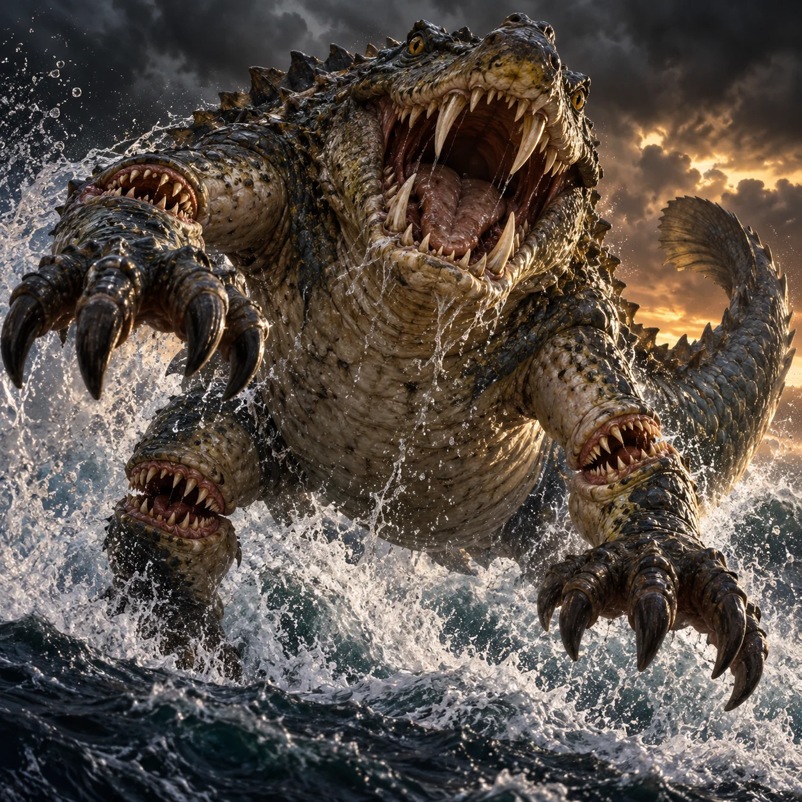
Monster laut primordial gabungan buaya, ikan dan katak, dengan mulut pada sendi.
Aura: No magical energy; the monster physically heaves seawater with its body and snapping mouths [cipactli-c02]
Audit ciri dan sumber
- [object Object]
- [object Object]
- [object Object]
PNG asli: monster buaya/katak berekor sirip ikan menyerbu dari air, satu kepala besar dan mulut tambahan jelas di sendi yang terbuka; tungkai belakang lain tertutup tubuh dan cipratan. Atribut c01/c02/c10 terbaca pada thumbnail. Uji Sangar 7/7; tanpa korban, gore, teks atau energi generik.
Review sumberONE original square premium painterly cinematic Mythics illustration of Cipactli, as documented in the accepted traditional claims.
ANATOMY: One primeval monster combining crocodilian head and hide, fishlike tail and a squat toad body: one main head, two eyes, four limbs. Clearly readable small gnashing mouths at every visible limb joint, especially elbows and knees, plus huge fangs in the main mouth; no human body [cipactli-c01, cipactli-c02, cipactli-c10]
MOMENT: Lunge upward from the primeval ocean straight toward the viewer, all joint mouths opening in insatiable hunger.
POWER: No magical energy; the monster physically heaves seawater with its body and snapping mouths [cipactli-c02]
SCALE & CAMERA: extreme low angle, dominant close framing; subject fills the image and distinguishing anatomy is readable at 200 pixels.
LIGHT & WEATHER: one dying amber horizon beam, heavy black cloud, salt spray.
SURFACE: rugged crocodile armor, slick fish scales, coarse toad flesh.
SETTING: The primordial ocean before the earth was formed [cipactli-c06, cipactli-c09]
MOOD: dangerous or awe-inspiring, imposing active presence, never cute, neutral, decorative or calm.
HARD CONSTRAINTS: one square image, native resolution at least 1024x1024; no text, lettering, logo, border, frame or watermark; no extra heads, limbs or fingers; no borrowed film, game, anime or comic design; no nudity or explicit gore; no generic glow aura, neon outline, energy ribbons or floating symbols.
Damballa
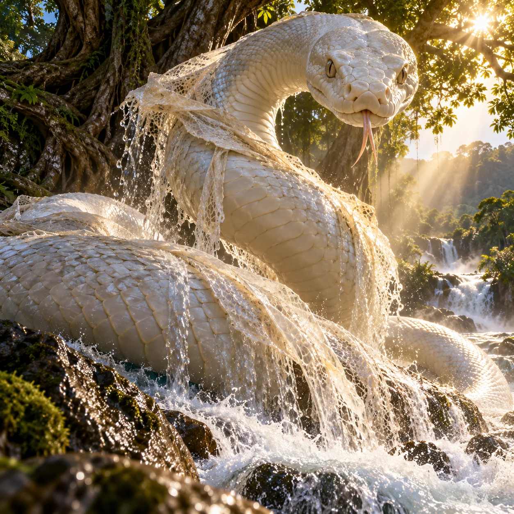
Damballa sebagai ular putih agung yang berganti kulit dan menghadirkan air.
Aura: Real freshwater cascades from the shedding skin and joins the spring, expressing the documented creation of Earth's waters [damballa-c06]
Audit ciri dan sumber
- [object Object]
- [object Object]
- [object Object]
PNG asli: ular putih agung memenuhi bingkai dan menunduk aktif, satu kepala tanpa tungkai; kulit lama mengelupas dengan aliran air nyata c06. Pohon dan sumber air c16/c20 menjadi latar. Terasa pencipta baik hati yang menggetarkan, bukan hewan biasa. Uji Sangar 7/7.
Review sumberONE original square premium painterly cinematic Mythics illustration of Damballa, as documented in the accepted traditional claims.
ANATOMY: One great white serpent: one natural serpent head, two eyes, one immense limbless coiling body, no horns or wings; benevolent and wise, not evil [damballa-c02, damballa-c07, damballa-c08]
MOMENT: Rise majestically and turn toward the viewer while shedding the old translucent serpent skin from his massive coils.
POWER: Real freshwater cascades from the shedding skin and joins the spring, expressing the documented creation of Earth's waters [damballa-c06]
SCALE & CAMERA: extreme low angle, dominant close framing; subject fills the image and distinguishing anatomy is readable at 200 pixels.
LIGHT & WEATHER: single warm shaft of early sun, deep walnut shadows, water mist.
SURFACE: white ivory scales, dry translucent cast skin, wet bark.
SETTING: A great tree beside a spring and river [damballa-c16, damballa-c20]
MOOD: dangerous or awe-inspiring, imposing active presence, never cute, neutral, decorative or calm.
HARD CONSTRAINTS: one square image, native resolution at least 1024x1024; no text, lettering, logo, border, frame or watermark; no extra heads, limbs or fingers; no borrowed film, game, anime or comic design; no nudity or explicit gore; no generic glow aura, neon outline, energy ribbons or floating symbols.
Flathead Lake Monster
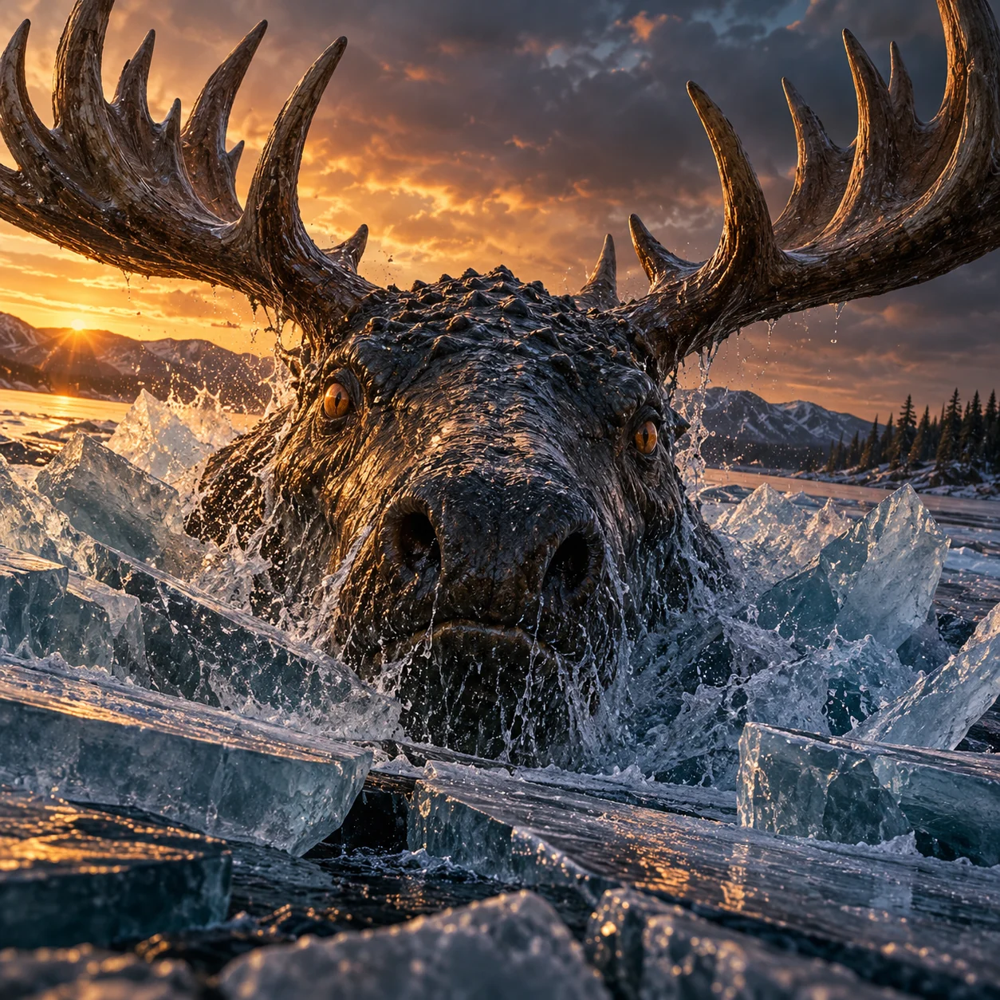
Kepala monster bertanduk raksasa dari legenda Kutenai, tanpa mencampurkan wujud belut penampakan modern.
Aura: The frozen lake visibly splits open and heavy ice plates rear up as the head rises [flathead-lake-monster-c03]
Audit ciri dan sumber
- [object Object]
- [object Object]
- [object Object]
PNG asli: kepala monster air satu kepala dengan sepasang antler raksasa menghancurkan lapisan es c03; dua mata terbaca dan tubuh tetap tidak terlihat. Bingkai penuh kepala dan pecahan es, tatapan konfrontatif. Uji Sangar 7/7; tanpa campuran tubuh belut atau korban.
Review sumberONE original square premium painterly cinematic Mythics illustration of Flathead Lake Monster, as documented in the accepted traditional claims.
ANATOMY: One enormous lake-monster head bearing a single symmetrical pair of gigantic branching antlers; two eyes; body remains hidden under the frozen lake so do not invent limbs or torso [flathead-lake-monster-c03]
MOMENT: Thrust the immense antlered head through shattered lake ice toward the viewer, force slabs of ice apart with its emergence.
POWER: The frozen lake visibly splits open and heavy ice plates rear up as the head rises [flathead-lake-monster-c03]
SCALE & CAMERA: extreme low angle, dominant close framing; subject fills the image and distinguishing anatomy is readable at 200 pixels.
LIGHT & WEATHER: one low amber dusk beam, deep bluish-black ice shadows, icy spray.
SURFACE: rough dark wet skin, ridged antler bone, fractured ice.
SETTING: Frozen Flathead Lake, Montana, with small distant shoreline pines [flathead-lake-monster-c01, flathead-lake-monster-c03]
MOOD: dangerous or awe-inspiring, imposing active presence, never cute, neutral, decorative or calm.
HARD CONSTRAINTS: one square image, native resolution at least 1024x1024; no text, lettering, logo, border, frame or watermark; no extra heads, limbs or fingers; no borrowed film, game, anime or comic design; no nudity or explicit gore; no generic glow aura, neon outline, energy ribbons or floating symbols.
Hatmehit
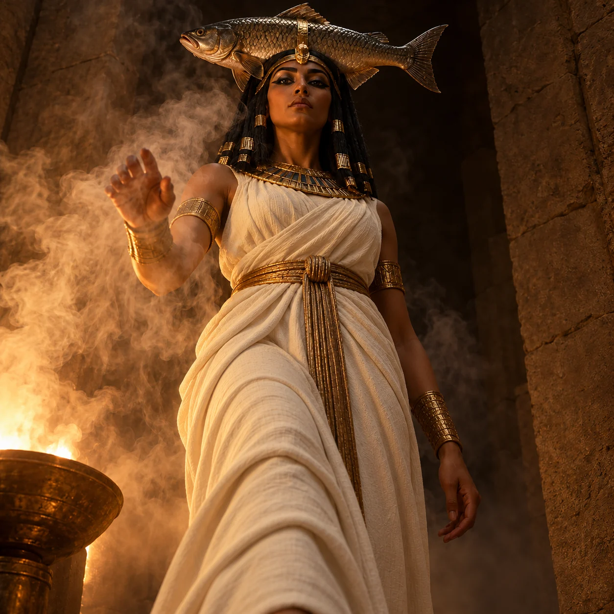
Hatmehit berwujud perempuan berpakaian buram dengan ikan besar di atas kepalanya.
Aura: No supernatural effects; real perfumed myrrh smoke expresses her documented association with scents and Lady of myrrh [hatmehit-c10]
Audit ciri dan sumber
- [object Object]
- [object Object]
- [object Object]
Viewed native1254: garment now substantial opaque linen at chest abdomen and skirt, no transparent panel. Single complete fish crown remains clear, female2arms/2eyes, advancing commanding gesture and myrrh smoke retained. No added power/text/watermark; correction answers Claude sheerness reason.
Review sumberEdit only the clothing in this original square premium cinematic painterly Mythics illustration of Hatmehit. Preserve exactly her commanding forward gesture, face, single fish headdress, gold jewelry, two arms, hand anatomy, body pose, cropped low camera perspective, temple stone background, ordinary myrrh smoke and warm light. Replace ALL thin translucent white clothing, from shoulders and chest to lower visible hem, with substantial densely woven fully OPAQUE ancient Egyptian cream linen lined with a second opaque layer. Broad matte opaque folds completely cover chest, abdomen, pelvis and legs; no skin or silhouette of underlying anatomical detail visible through any fabric even where backlit. The fabric is weighty textured cloth with solid coverage, not gauze or wet thin material. Keep her moving forward and filling the square with solemn divine authority. No other changes: no new supernatural power, objects, heads, limbs, fingers, horns or sun disk. Preserve one complete fish on head, one human head, two arms. No text, border, logo, watermark, nudity, explicit gore, neon glow or floating runes. Source grounding: female fish-crown form hatmehit-c02; temple setting hatmehit-c03; ordinary incense evokes perfume/myrrh association hatmehit-c10 without claiming magic smoke. Opaque gown and lighting are artistic clothing choices, not extra source facts. Output one native square PNG >=1024 pixels.
Sirena (Philippine mythology)
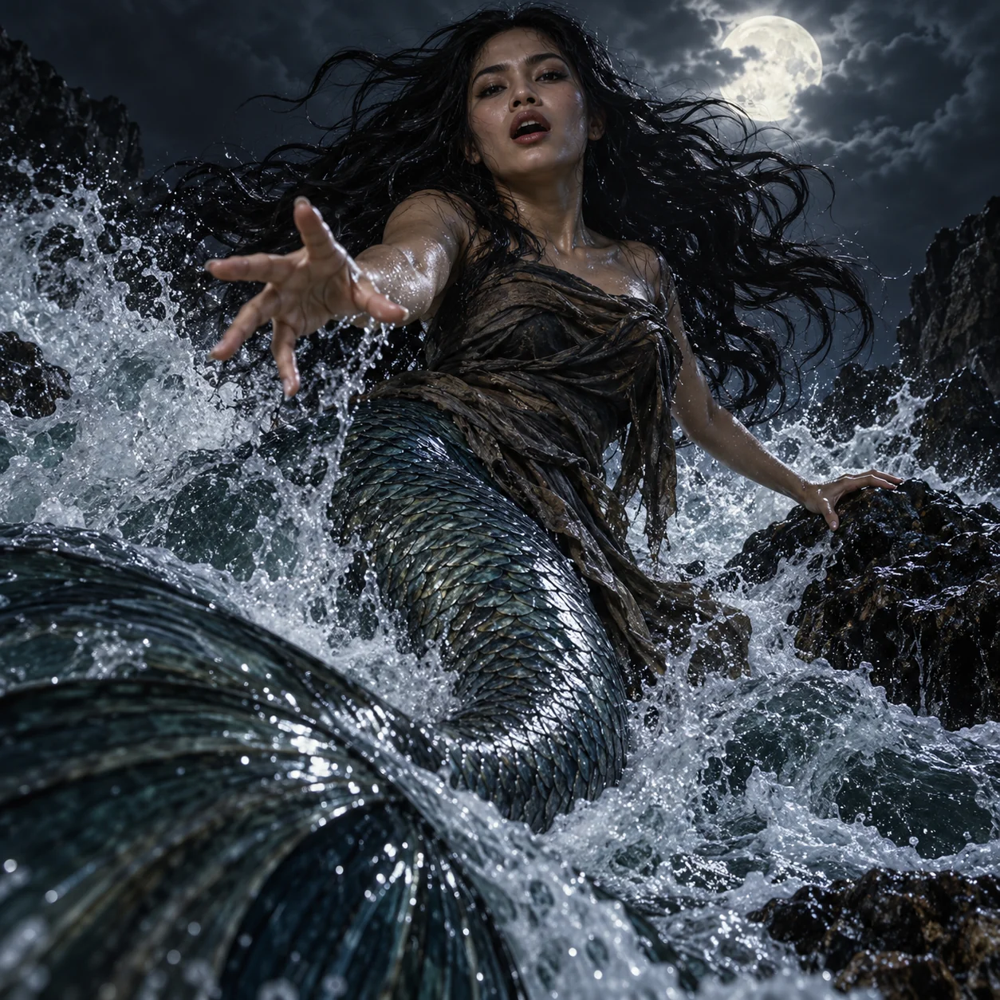
Sirena berekor ikan mengangkat air di pantai berbatu saat menyanyi.
Aura: The water rises rapidly into a real engulfing surge around her, physically drowning the rocky shore; no music symbols or magical beams [sirena-philippine-mythology-c03, sirena-philippine-mythology-c24]
Audit ciri dan sumber
- [object Object]
- [object Object]
- [object Object]
PNG asli: sirena satu kepala dua lengan dengan satu ekor ikan tanpa kaki; busana dada dan torso buram. Tangan meraih penonton dan mulut menyanyi, gelombang naik nyata c24 di batu pantai c09. Ekor besar foreground membuat makhluk langsung terbaca. Uji Sangar 7/7.
Review sumberONE original square premium painterly cinematic Mythics illustration of Sirena (Philippine mythology), as documented in the accepted traditional claims.
ANATOMY: One adult mermaid with one woman's head and torso, two eyes and two arms, very long flowing wavy black hair, one fish tail from the waist down and no legs. Fully opaque weathered dark cloth covers the entire chest and torso [sirena-philippine-mythology-c01, sirena-philippine-mythology-c12]
MOMENT: Surge toward the viewer out of the shore rocks while singing with intense direct gaze, her long scaled tail curling through the foreground.
POWER: The water rises rapidly into a real engulfing surge around her, physically drowning the rocky shore; no music symbols or magical beams [sirena-philippine-mythology-c03, sirena-philippine-mythology-c24]
SCALE & CAMERA: extreme low angle, dominant close framing; subject fills the image and distinguishing anatomy is readable at 200 pixels.
LIGHT & WEATHER: single low moon shaft, deep walnut-black shadows, violent salt spray.
SURFACE: wet fish scales, tangled black hair, coarse opaque cloth.
SETTING: Rocky Philippine shore in the darkness beside the sea [sirena-philippine-mythology-c09]
MOOD: dangerous or awe-inspiring, imposing active presence, never cute, neutral, decorative or calm.
HARD CONSTRAINTS: one square image, native resolution at least 1024x1024; no text, lettering, logo, border, frame or watermark; no extra heads, limbs or fingers; no borrowed film, game, anime or comic design; no nudity or explicit gore; no generic glow aura, neon outline, energy ribbons or floating symbols.
Skin-walker
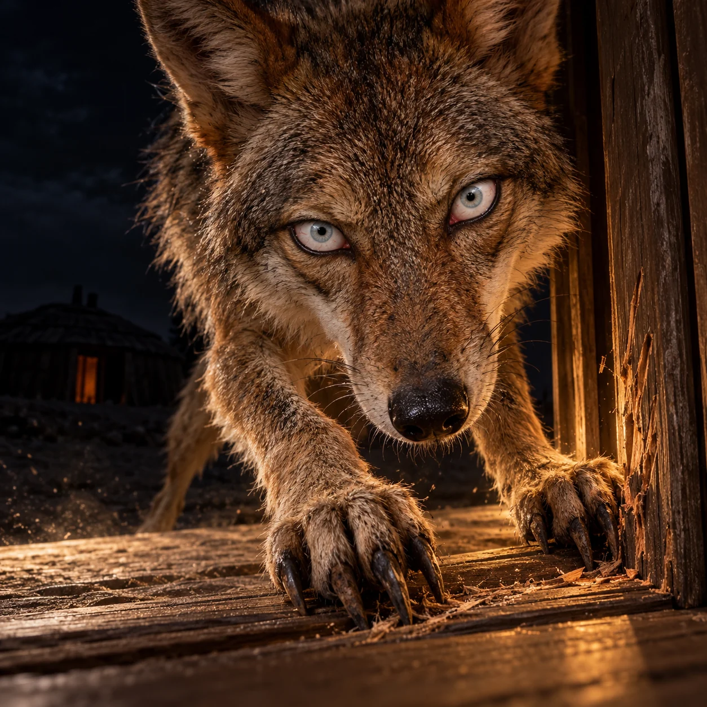
Skin-walker dalam wujud coyote bermata manusia yang menggores pintu rumah.
Aura: No glowing effects; human eyes in animal form express the documented unnatural transformation [skin-walker-c01, skin-walker-c12]
Audit ciri dan sumber
- [object Object]
- [object Object]
- [object Object]
PNG asli percobaan kedua: wajah coyote sangat dekat dengan dua mata manusia jelas, sclera putih luas dan iris manusia kecil c12; dua kaki depan aktif menggores ambang. Wujud hewan empat kaki tanpa tanduk atau tungkai hibrida. Uji Sangar 7/7, keganjilan terbaca pada thumbnail.
Review sumberONE original square premium painterly cinematic Mythics illustration of Skin-walker, as documented in the accepted traditional claims.
ANATOMY: One skin-walker in fully transformed coyote animal form, one coyote head, exactly two unmistakably HUMAN EYEBALLS embedded in the coyote face: very broad bright white sclera surrounding small pale blue human irises and round black pupils, almond-shaped human eyelids, absolutely not brown or yellow canine eyes, four paws, one tail, no deer antlers, no hybrid extra arms, no upright humanoid body [skin-walker-c07, skin-walker-c12, skin-walker-c16]
MOMENT: Scrape the wooden entrance of a home with the front paws while twisting its head toward the viewer, a disturbingly human intelligent stare holding our gaze.
POWER: No glowing effects; human eyes in animal form express the documented unnatural transformation [skin-walker-c01, skin-walker-c12]
SCALE & CAMERA: extreme low angle, dominant close framing; a face-and-front-paws close-up; face occupies over half the frame, both broad white HUMAN eye sclera readable at 200 pixels, rear body cropped out naturally.
LIGHT & WEATHER: one dim warm light from the doorway, low-key darkness, windblown dust.
SURFACE: matted coyote fur, weathered timber, dirty claws.
SETTING: Outside a hogan home in deep night, tight view of a dark wooden doorway [skin-walker-c12, skin-walker-c17]
MOOD: dangerous or awe-inspiring, imposing active presence, never cute, neutral, decorative or calm.
HARD CONSTRAINTS: one square image, native resolution at least 1024x1024; no text, lettering, logo, border, frame or watermark; no extra heads, limbs or fingers; no borrowed film, game, anime or comic design; no nudity or explicit gore; no generic glow aura, neon outline, energy ribbons or floating symbols.
CRITICAL: make the two human eyes visibly impossible on a coyote: large clean white sclera, small pale-blue human irises, human eyelids. This is the indispensable documented identifying trait. The face must stare with cold malevolent human intent as its front paws actively scrape the threshold. No brown/gold animal eyes, no generic monster eyes, no glowing eyes.
Thunderbird
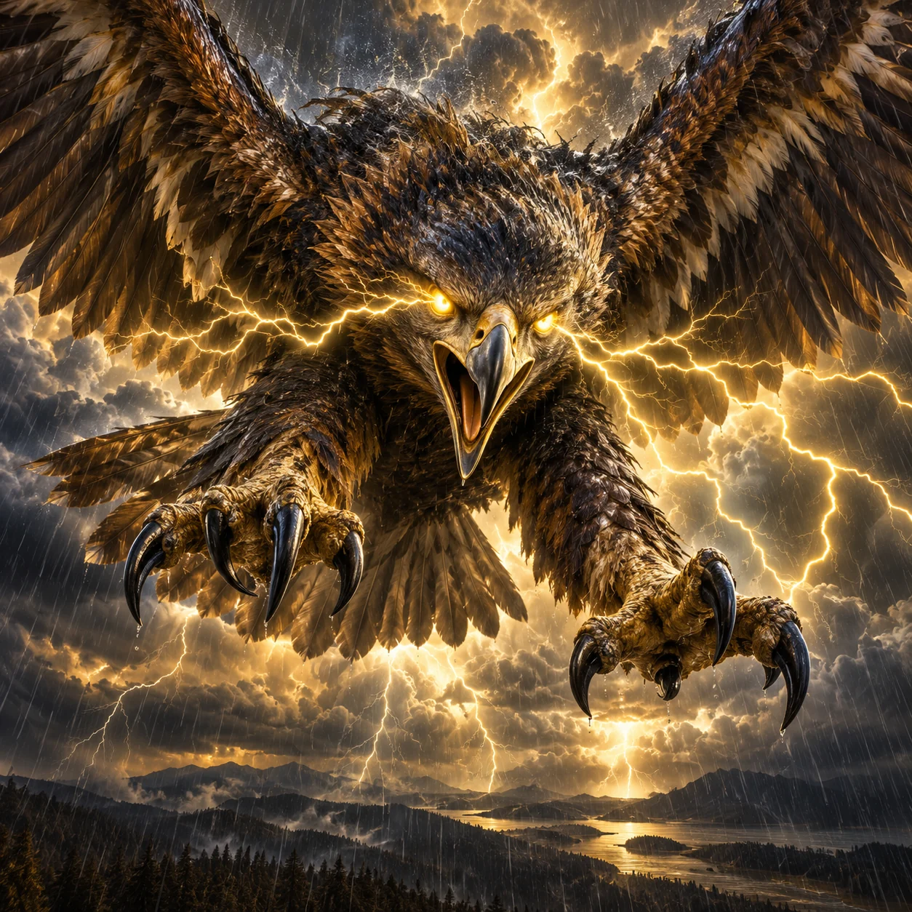
Thunderbird burung pemangsa raksasa yang mengepakkan sayap dan melepaskan kilat dari mata.
Aura: Real lightning forks from the flashing eyes through the storm, thunder-driving wing strokes buffet the rain [thunderbird-c05, thunderbird-c10, thunderbird-c16]
Audit ciri dan sumber
- [object Object]
- [object Object]
- [object Object]
PNG asli: burung pemangsa raksasa menukik dengan satu kepala, dua sayap dan dua kaki bercakar; mata melepaskan kilat bercabang nyata c05/c10/c16. Hujan dan langit didominasi burung, lanskap kecil memberi skala c19. Uji Sangar 7/7; tanpa simbol, teks atau aura generik.
Review sumberONE original square premium painterly cinematic Mythics illustration of Thunderbird, as documented in the accepted traditional claims.
ANATOMY: One enormous supernatural bird of prey, one raptor head, two eyes, exactly two immense feathered wings, two taloned feet, one fan tail; original naturalistic bird, no human hybrid or cultural art patterns [thunderbird-c01, thunderbird-c04, thunderbird-c19]
MOMENT: Drive its enormous wings downward while diving toward the viewer, opening both eyes to cast lightning down into the storm.
POWER: Real lightning forks from the flashing eyes through the storm, thunder-driving wing strokes buffet the rain [thunderbird-c05, thunderbird-c10, thunderbird-c16]
SCALE & CAMERA: extreme low angle, dominant close framing; subject fills the image and distinguishing anatomy is readable at 200 pixels.
LIGHT & WEATHER: single bright lightning flash, deep antique-gold and charcoal shadows, rain.
SURFACE: wet rugged feathers, storm-worn beak and talons.
SETTING: The upper storm sky over a distant dark landscape [thunderbird-c03]
MOOD: dangerous or awe-inspiring, imposing active presence, never cute, neutral, decorative or calm.
HARD CONSTRAINTS: one square image, native resolution at least 1024x1024; no text, lettering, logo, border, frame or watermark; no extra heads, limbs or fingers; no borrowed film, game, anime or comic design; no nudity or explicit gore; no generic glow aura, neon outline, energy ribbons or floating symbols.
Unhcegila
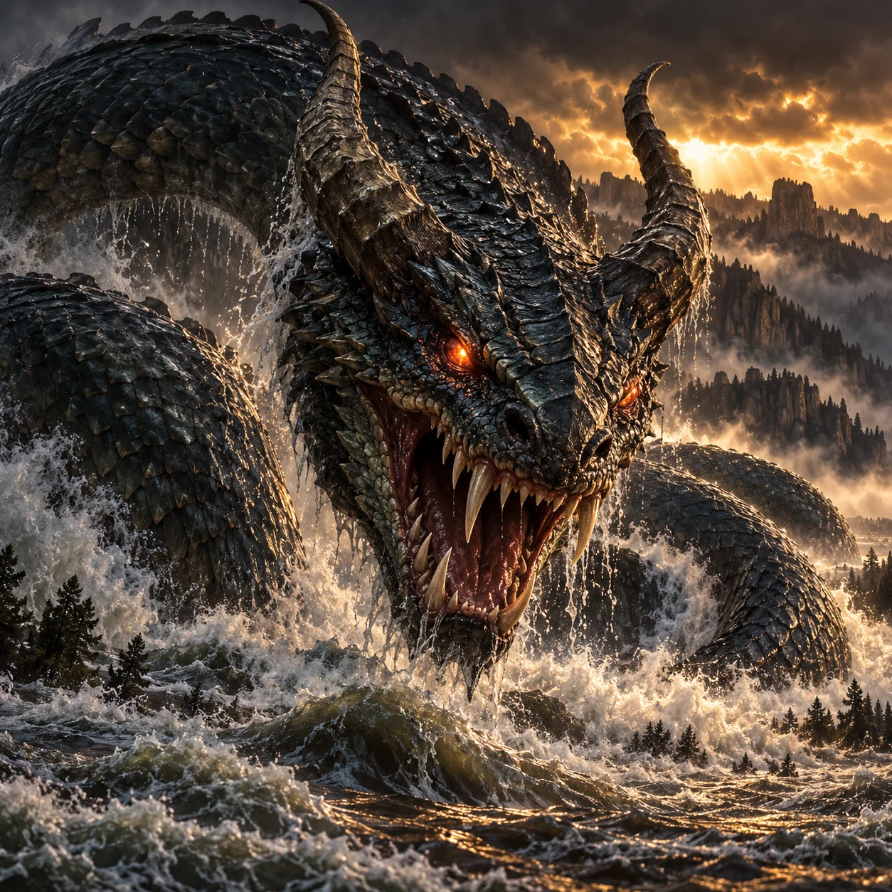
Unhcegila ular air bertanduk bersisik tebal, muncul dari banjir.
Aura: Primordial water floods the land around the rising serpent; the documented eyes of fire cast tiny localized orange reflections, never a glowing body aura [unhcegila-c05, unhcegila-c06, unhcegila-c10]
Audit ciri dan sumber
- [object Object]
- [object Object]
- [object Object]
PNG asli: ular raksasa bertanduk satu kepala bermata api lokal, sisik lapis keras c02, mulut bertaring c05 dan tanduk c15; kepala menunduk menyerbu dari banjir c10. Tidak ada tungkai yang dikarang, Black Hills latar kecil c07. Uji Sangar 7/7.
Review sumberONE original square premium painterly cinematic Mythics illustration of Unhcegila, as documented in the accepted traditional claims.
ANATOMY: One massive horned water serpent, one fanged head, two eyes burning like fire, one long heavily armored scaly body; a pair of horns on the head. No visible limbs in this close coil-and-head composition, no extra heads [unhcegila-c01, unhcegila-c02, unhcegila-c05, unhcegila-c15]
MOMENT: Emerge toward the viewer from a catastrophic flood, tilt the horned fanged head down in wrathful hunger while immense coils roll behind it.
POWER: Primordial water floods the land around the rising serpent; the documented eyes of fire cast tiny localized orange reflections, never a glowing body aura [unhcegila-c05, unhcegila-c06, unhcegila-c10]
SCALE & CAMERA: extreme low angle, dominant close framing; subject fills the image and distinguishing anatomy is readable at 200 pixels.
LIGHT & WEATHER: single low amber storm break, wet black shadows, flood spray.
SURFACE: nearly impenetrable layered dark scales, wet horn ridges.
SETTING: Flooded land with dark Black Hills ridges [unhcegila-c07, unhcegila-c10]
MOOD: dangerous or awe-inspiring, imposing active presence, never cute, neutral, decorative or calm.
HARD CONSTRAINTS: one square image, native resolution at least 1024x1024; no text, lettering, logo, border, frame or watermark; no extra heads, limbs or fingers; no borrowed film, game, anime or comic design; no nudity or explicit gore; no generic glow aura, neon outline, energy ribbons or floating symbols.
Unuqay
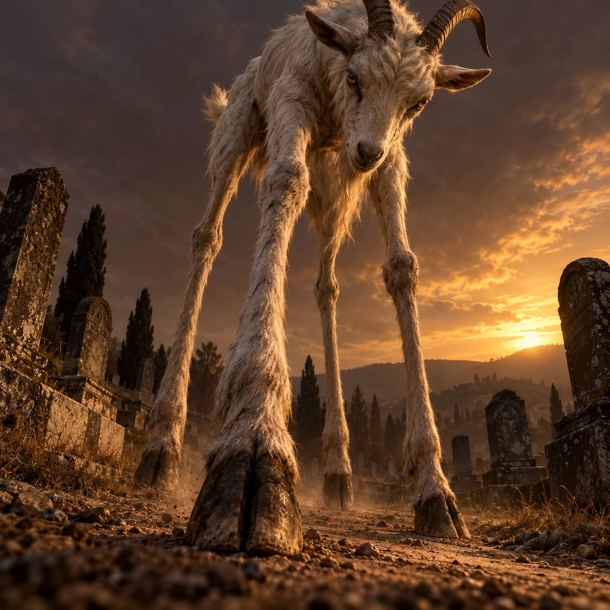
Unuqay kambing putih dengan empat kaki memanjang di jalan kuburan senja.
Aura: Its documented legs physically elongate; no colored aura or invented magic effects [unuqay-c04]
Audit ciri dan sumber
- [object Object]
- [object Object]
- [object Object]
PNG asli: kambing putih satu kepala dua tanduk dan tepat empat kaki sangat panjang dengan kuku belah; satu kaki belakang terangkat saat melangkah dan kepala menunduk ke penonton. Kaki memanjang c04, jalan kuburan senja c03. Uji Sangar 7/7; tidak terbaca kambing biasa, tanpa teks atau aura.
Review sumberONE original square premium painterly cinematic Mythics illustration of Unuqay, as documented in the accepted traditional claims.
ANATOMY: One white billy-goat monster with one goat head, two eyes, two ordinary goat horns, exactly four extremely unnaturally lengthening legs with cloven hooves, one small goat tail; no extra limbs [unuqay-c01, unuqay-c04, unuqay-c11]
MOMENT: Stride toward the viewer across the cemetery road as its four thin legs lengthen visibly and lift its body far above an ordinary goat stance; bend its goat face down in confrontational deception.
POWER: Its documented legs physically elongate; no colored aura or invented magic effects [unuqay-c04]
SCALE & CAMERA: extreme low angle, dominant close framing; subject fills the image and distinguishing anatomy is readable at 200 pixels.
LIGHT & WEATHER: single fading amber dusk beam, deep brown grave shadows, dusty air.
SURFACE: dirty white coarse goat hair, aged rough grave stones.
SETTING: A cemetery roadside in Azerbaijan as darkness falls at dusk [unuqay-c03]
MOOD: dangerous or awe-inspiring, imposing active presence, never cute, neutral, decorative or calm.
HARD CONSTRAINTS: one square image, native resolution at least 1024x1024; no text, lettering, logo, border, frame or watermark; no extra heads, limbs or fingers; no borrowed film, game, anime or comic design; no nudity or explicit gore; no generic glow aura, neon outline, energy ribbons or floating symbols.
Vision Serpent
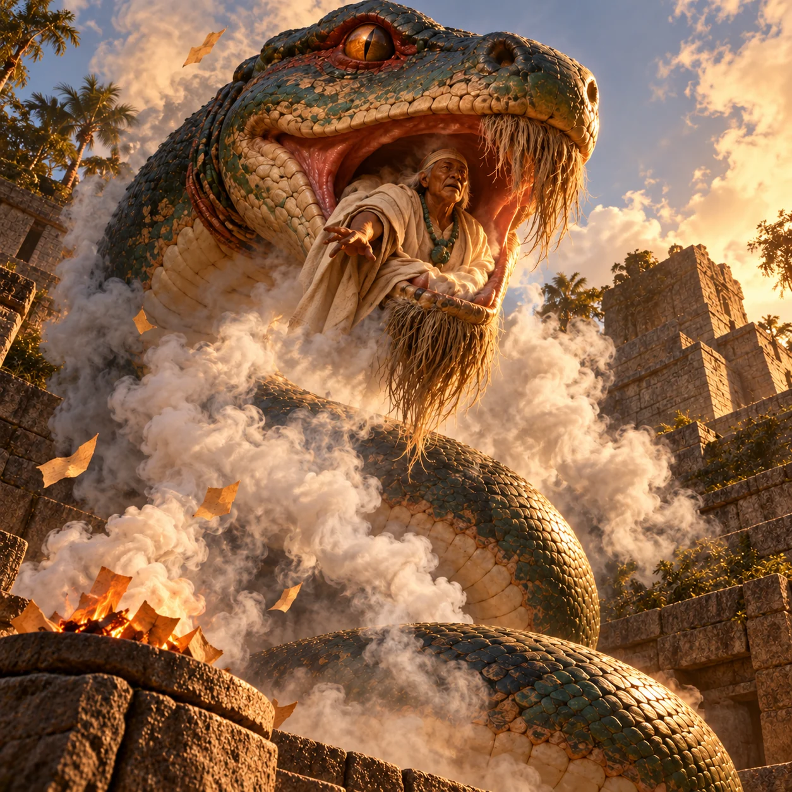
rounded-snout single-headed ancestral gateway
Aura: A real column of ceremonial-paper smoke surrounds the emerging serpent; the ancestral apparition is enclosed in its jaws, no neon portal or luminous fog Basis klaim: vision-serpent-c04, vision-serpent-c05, vision-serpent-c06, vision-serpent-c07.
Audit ciri dan sumber
- [object Object]
- [object Object]
- [object Object]
Root melihat native hasil edit: satu kepala ular bermoncong bulat dengan janggut, satu tubuh melilit koheren tanpa kaki/sayap/tanduk, leluhur berpakaian muncul dari rahang sesuai c04/c05/c06; asap berasal dari brazier kertas terbakar c07. Ukiran tulisan percobaan awal kini dihapus; kain/batu polos. Subjek agung dominan, aksi muncul aktif dan tanpa aura atau gore. Tujuh cek Sangar lulus.
Review sumberEdit the reference image only: preserve the exact giant ONE-headed bearded rounded-snout serpent, ancestor emerging from jaws, coiled anatomy, framing, scale, lighting, fire and smoke. REMOVE every glyph, hieroglyph, letter, symbol, pseudo-writing, carved ornamental panel and pattern from the brazier, all temple walls, stone blocks, stairways, ancestor clothing and jewelry. Replace with completely plain weathered stone, plain unpatterned opaque cloth and simple unmarked jewelry. Do not introduce any new design or object. The image must contain NO writing-like or symbolic markings ANYWHERE. The serpent remains the active, awe-inspiring subject. Native square premium painterly cinematic image.
Aethon (Caucasian Eagle)
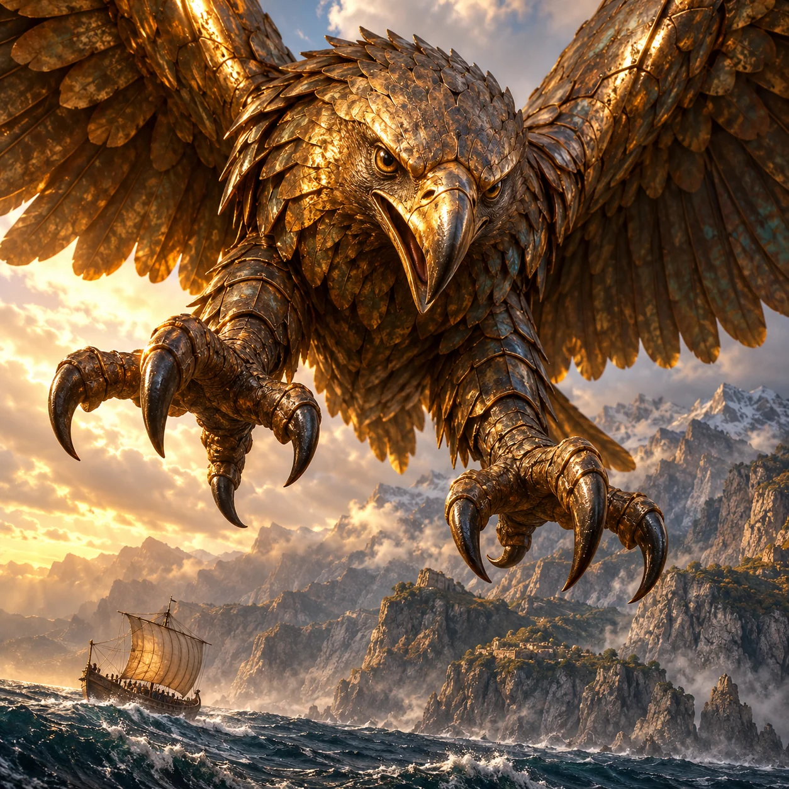
giant bronze automaton eagle
Aura: The documented gigantic wings make a tiny ancient ship sail below quiver from the downdraft; no magic beams, sparks or fire Basis klaim: aethon-q1371462-c03, aethon-q1371462-c04, aethon-q1371462-c06, aethon-q1371462-c07, aethon-q1371462-c02.
Audit ciri dan sumber
- [object Object]
- [object Object]
- [object Object]
Root melihat PNG native: satu kepala elang, dua sayap perunggu panjang, dua kaki/cakar koheren; memburu dari kamera rendah, kapal kecil dan layar terbaca. Dominasi dan ancaman sangat jelas, tidak ada teks/auragenerik/gore; seluruh tujuh Uji Sangar lulus. Bentuk automaton c04; ukuran c03; layar kapal dan downdraft c07.
Review sumberONE original square premium painterly cinematic Mythics illustration of AETHON-Q1371462, the gigantic Caucasian Eagle, in the bronze automaton variant made by Hephaestus.
ANATOMY: one eagle head, hooked beak, two eyes, exactly two great wings made of overlapping aged bronze feather plates, two taloned feet, no other limbs. [aethon-q1371462-c03, aethon-q1371462-c04, aethon-q1371462-c06]
MOMENT: Plunge toward the viewer with both wings driving air downward and both talons extended.
POWER: The documented gigantic wings make a tiny ancient ship sail below quiver from the downdraft; no magic beams, sparks or fire. [aethon-q1371462-c07]
SCALE & CAMERA: extreme low angle and close foreground, subject dominates the frame and its distinguishing features read clearly at 200 pixels. Numerical scale is asserted only when documented; otherwise dramatic close perspective.
LIGHT & WEATHER: one strong warm sidelight, antique-gold rim light, walnut shadows, high contrast with visible dark details and appropriate natural moisture.
SURFACE: rough physically convincing natural surfaces, textured scales or feathers or coarse fur as applicable, painterly cinematic realism rather than plastic.
SETTING: the precipitous Caucasus coastal mountain landscape, a small distant sailing ship for the documented scene. [aethon-q1371462-c02, aethon-q1371462-c07]
MOOD: dangerous or awe-inspiring as appropriate to the tradition; commanding, alert and actively moving; sacred beings treated with respect.
HARD CONSTRAINTS: no text, letters, pseudo-glyphs, logos, watermark, border or frame; no extra heads, limbs, eyes or fingers; no nudity or explicit gore; no film, game, anime or comic design; no generic glow aura, neon outline, energy ribbons or luminous colored mist. One single square image.
Átahsaia
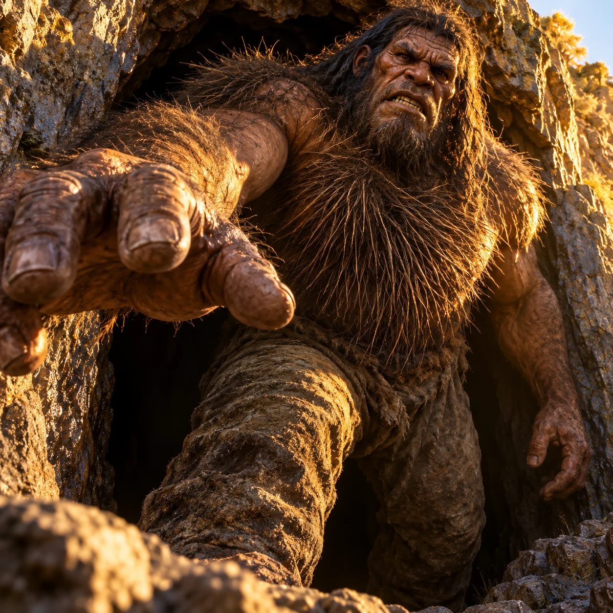
Cushing giant with bristling breast hair
Aura: no documented emitted power; presence through documented size, bristling chest hair, teeth and looming movement only Basis klaim: atahsaia-c02, atahsaia-c03, atahsaia-c09, atahsaia-c10, atahsaia-c08.
Audit ciri dan sumber
- [object Object]
- [object Object]
Root melihat PNG native: satu kepala humanoid berumur, dua tangan dan dua kaki koheren, dada dengan bulu kasar panjang seperti duri, pakaian buram, bahu memenuhi gua dan tangan menjangkau penonton. Mata/gigi/tekstur memberi dominasi, bukan manusia biasa; tidak ada tanduk, aura, gore, teks. Uji Sangar tujuh butir lulus; wujud c09, ukuran c02/c03, rumah gua c08. Natural warmth and reach are editorial.
Review sumberONE original square premium painterly cinematic Mythics illustration of ATAHSAIA, the enormous demon of the Zuni tale as described by Cushing.
ANATOMY: one rough aged humanoid head, two eyes, two arms, two legs, massive elk-sized body and shaggy breast fur stiff as porcupine quills, ordinary humanlike ears, no invented horns or animal head; opaque coarse trousers. [atahsaia-c02, atahsaia-c03, atahsaia-c09, atahsaia-c10]
MOMENT: Lean out of his dark cave and reach a huge hairy hand toward the foreground, shoulders too broad for the mouth of the cave.
POWER: no documented emitted power; presence through documented size, bristling chest hair, teeth and looming movement only. []
SCALE & CAMERA: extreme low angle and close foreground, subject dominates the frame and its distinguishing features read clearly at 200 pixels. Numerical scale is asserted only when documented; otherwise dramatic close perspective.
LIGHT & WEATHER: one strong warm sidelight, antique-gold rim light, walnut shadows, high contrast with visible dark details and appropriate natural moisture.
SURFACE: rough physically convincing natural surfaces, textured scales or feathers or coarse fur as applicable, painterly cinematic realism rather than plastic.
SETTING: the cave of Atahsaia with the narrow entrance dwarfed by his broad shoulders. [atahsaia-c03, atahsaia-c08]
MOOD: dangerous or awe-inspiring as appropriate to the tradition; commanding, alert and actively moving; sacred beings treated with respect.
HARD CONSTRAINTS: no text, letters, pseudo-glyphs, logos, watermark, border or frame; no extra heads, limbs, eyes or fingers; no nudity or explicit gore; no film, game, anime or comic design; no generic glow aura, neon outline, energy ribbons or luminous colored mist. One single square image.
Chiwen
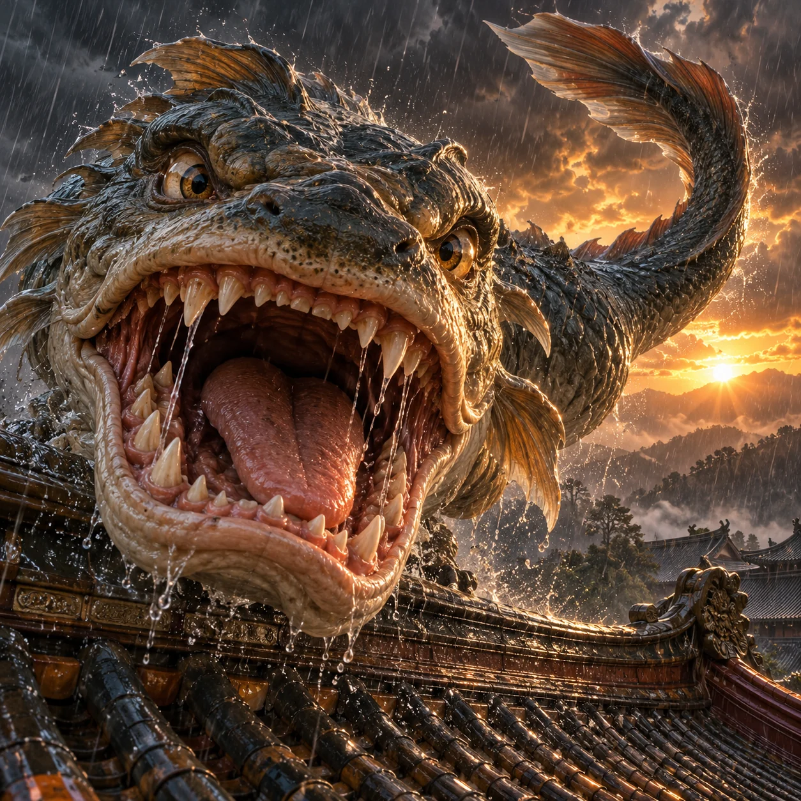
Living hornless short-bodied fish-dragon lunging over temple roofridge
Aura: Presence through active source-grounded subject: chiwen-c02, chiwen-c07, chiwen-c14, chiwen-c08, chiwen-c09, chiwen-c06, chiwen-c13
Audit ciri dan sumber
- [object Object]
- [object Object]
- [object Object]
Root native: creature visibly living with wet soft gums, tongue, saliva, mottledscales and flexiblefins. Onehornless2eyed broadmouth fishdragon shortbody/onetail, poisedlunging towardsviewer atoproof. No stone/glaze/sculpture; no extra limbs or unclaimedpower. Dramaticguardianawe. Native1254 inspected;200 pending.
Review sumberONE original square premium painterly cinematic Mythics illustration of CHIWEN, a LIVING hornless fish-like roof guardian dragon. This is breathing animal flesh, no ceramic, jade, metal or stone material anywhere on the creature.
ANATOMY: ONE broad hornless fish-dragon head with TWO natural intense eyes, an extraordinarily broad mouth, very short muscular fish-like body and ONE thick twisting tail thrusting upward. The animal has no antlers/horns, no legs, no wings; short fins are fish morphology chosen for rendering, not a source assertion. [chiwen-c02,chiwen-c07,chiwen-c14]
MOMENT: LUNGE towards viewer over the roofridge, jaw opens wide as the muscular living body arches and tail whips through rain. Show tongue, soft wet gums, ordinary pointed teeth, saliva strands, living loose skin creases and small flexible dullscale patches. Eyes alert and threatening to threats, protective to humans. Visible breathing tissue makes it unmistakably living.
POWER: Roof/fire/flood protection is contextual; intact roof under natural storm. No firebreath or invented magic vortex. [chiwen-c07,chiwen-c08,chiwen-c09]
SCALE & CAMERA: Extremely close low camera at ridge level, head occupies most frame, lower jaw foreshortens towards viewer; rooftiles are scenery only.
LIGHT & WEATHER: One dominant amber lightning-distant sunsetbreak in cold heavy rain, dark walnut shadows, high contrast. Natural rain/saliva droplets.
SURFACE: Entire subject matte and organically asymmetrical: rough leathery gillcreases, wet translucent gums, dark mottled living scales, silt in skinfolds. ZERO glaze, porcelain crackle, sculpted scrolls or ornamental smooth finish.
SETTING: End of traditional Chinese temple roofridge in rain [chiwen-c06,chiwen-c13]. Wood and ceramic only in roof; distinguish them clearly from fleshy subject.
MOOD: Protective mythical guardian, dangerous and awe-inspiring, emphatically not ornament, statue, pet or decor.
HARD CONSTRAINTS: No text, glyphs, frame, logo, watermark, nudity or gore. No extra heads/eyes/tails/limbs/horns. No movie/game/anime likeness, generic luminous aura, neon outlines, floating runes, energy ribbons. One native square PNG >=1024.
Dragon King
Menunggu gambar yang lolos audit
giant frog
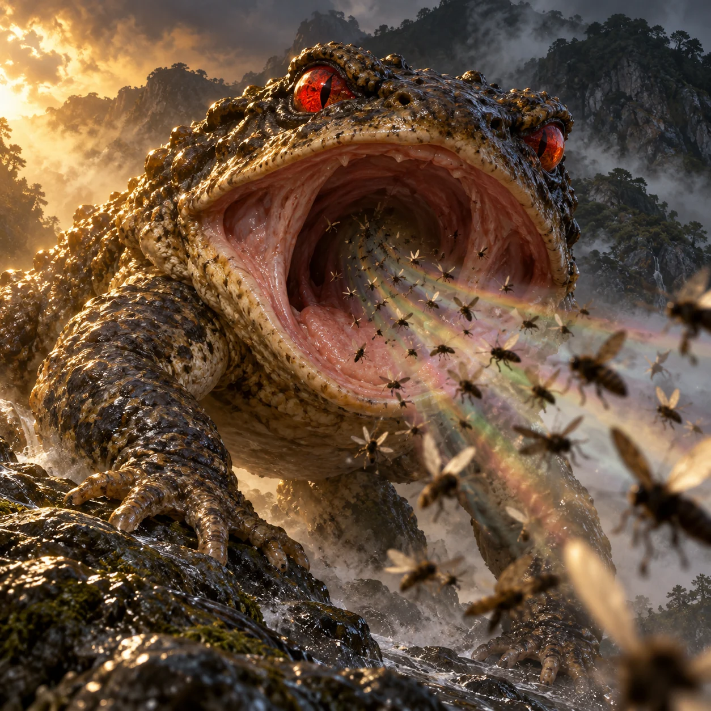
2.4-metre warty Suo toad with rainbow breath
Aura: A restrained rainbow-like breath draws insects toward its open mouth, the ONLY visible colored magical effect and explicitly documented; no additional aura Basis klaim: giant-frog-c01, giant-frog-c03, giant-frog-c07, giant-frog-c04, giant-frog-c02.
Audit ciri dan sumber
- [object Object]
- [object Object]
- [object Object]
Root melihat PNG native: satu kepala katak/kodok besar, dua mata merah terang, kulit berkutil dan tubuh/empat tungkai koheren dengan kaki belakang sebagian tersembunyi. Mulut lebar dan serangga tersedot melalui napas pelangi c04 membuatnya jelas supernatural, bukan katak biasa. Napas pelangi pengecualian terdokumentasi, tidak ada aura lain. Latar gunung Suo c02, ukuran c03, mata/kutil c07; tidak ada tulisan/gore. Uji Sangar tujuh butir lulus.
Review sumberONE original square premium painterly cinematic Mythics illustration of GIANT-FROG, the supernatural Japanese giant toad from the mountains of Suo.
ANATOMY: one broad toad head, two glaring fire-red eyes, warty rocklike body, exactly four toad legs, no horns or wings, approximately 2.4 metres long. [giant-frog-c01, giant-frog-c03, giant-frog-c07]
MOMENT: Open its cavernous mouth and inhale a small cloud of insects toward the viewer.
POWER: A restrained rainbow-like breath draws insects toward its open mouth, the ONLY visible colored magical effect and explicitly documented; no additional aura. [giant-frog-c04]
SCALE & CAMERA: extreme low angle and close foreground, subject dominates the frame and its distinguishing features read clearly at 200 pixels. Numerical scale is asserted only when documented; otherwise dramatic close perspective.
LIGHT & WEATHER: one strong warm sidelight, antique-gold rim light, walnut shadows, high contrast with visible dark details and appropriate natural moisture.
SURFACE: rough physically convincing natural surfaces, textured scales or feathers or coarse fur as applicable, painterly cinematic realism rather than plastic.
SETTING: dark rugged mountain slope in Suo, Japan, wet rocks and low mist. [giant-frog-c02]
MOOD: dangerous or awe-inspiring as appropriate to the tradition; commanding, alert and actively moving; sacred beings treated with respect.
HARD CONSTRAINTS: no text, letters, pseudo-glyphs, logos, watermark, border or frame; no extra heads, limbs, eyes or fingers; no nudity or explicit gore; no film, game, anime or comic design; no generic glow aura, neon outline, energy ribbons or luminous colored mist. One single square image.
Hatsadiling
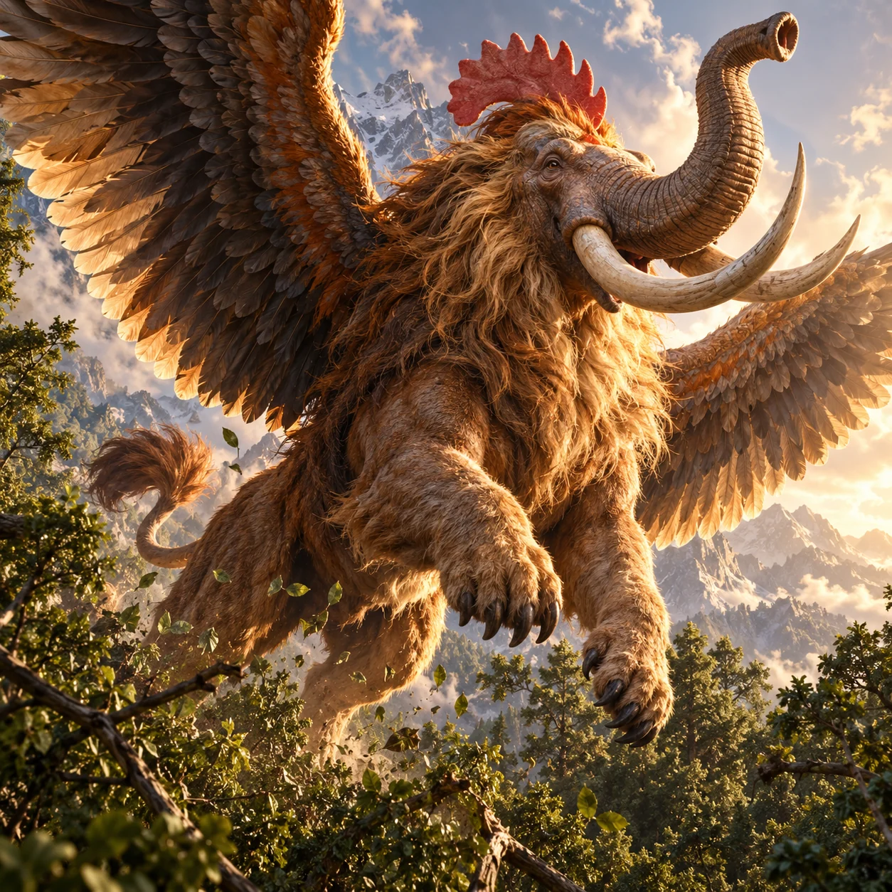
living lion-elephant-bird rising over Himavanta
Aura: Five-elephant strength conveyed through bodily mass and active wingbeats; only natural displaced leaves, no supernatural rays Basis klaim: hatsadiling-c01, hatsadiling-c02, hatsadiling-c07, hatsadiling-c06, hatsadiling-c08, hatsadiling-c03.
Audit ciri dan sumber
- [object Object]
- [object Object]
- [object Object]
Root melihat PNG native: satu kepala hybrid belalai gajah, dua gading, jengger ayam, tubuh/manelion dan dua sayap burung; dua kaki depan jelas, kaki belakang terhalang tubuh sesuai foreshortening, tidak ada appendage tambahan. Meluncur di atas hutan, tubuh kuat dan besar sesuai c06/c07; agung dan tidak jahat sesuai c08. Bentuk c02, latar c03; tanpa glow/teks/gore; tujuh Uji Sangar lulus.
Review sumberONE original square premium painterly cinematic Mythics illustration of HATSADILING, the enormous sacred bird of Himavanta with the strength of five elephants.
ANATOMY: one hybrid head with ONE elephant trunk and TWO tusks, a cock comb above, lionlike body and shaggy mane, exactly TWO bird wings and four natural lion legs; no extra heads or trunks. [hatsadiling-c01, hatsadiling-c02, hatsadiling-c07]
MOMENT: Launch upward over the canopy, beating its huge wings and lifting its trunk, imposing and benevolent.
POWER: Five-elephant strength conveyed through bodily mass and active wingbeats; only natural displaced leaves, no supernatural rays. [hatsadiling-c06, hatsadiling-c08]
SCALE & CAMERA: extreme low angle and close foreground, subject dominates the frame and its distinguishing features read clearly at 200 pixels. Numerical scale is asserted only when documented; otherwise dramatic close perspective.
LIGHT & WEATHER: one strong warm sidelight, antique-gold rim light, walnut shadows, high contrast with visible dark details and appropriate natural moisture.
SURFACE: rough physically convincing natural surfaces, textured scales or feathers or coarse fur as applicable, painterly cinematic realism rather than plastic.
SETTING: the dense Himavanta forest canopy, trees give size context. [hatsadiling-c03]
MOOD: dangerous or awe-inspiring as appropriate to the tradition; commanding, alert and actively moving; sacred beings treated with respect.
HARD CONSTRAINTS: no text, letters, pseudo-glyphs, logos, watermark, border or frame; no extra heads, limbs, eyes or fingers; no nudity or explicit gore; no film, game, anime or comic design; no generic glow aura, neon outline, energy ribbons or luminous colored mist. One single square image.
Jiaolong
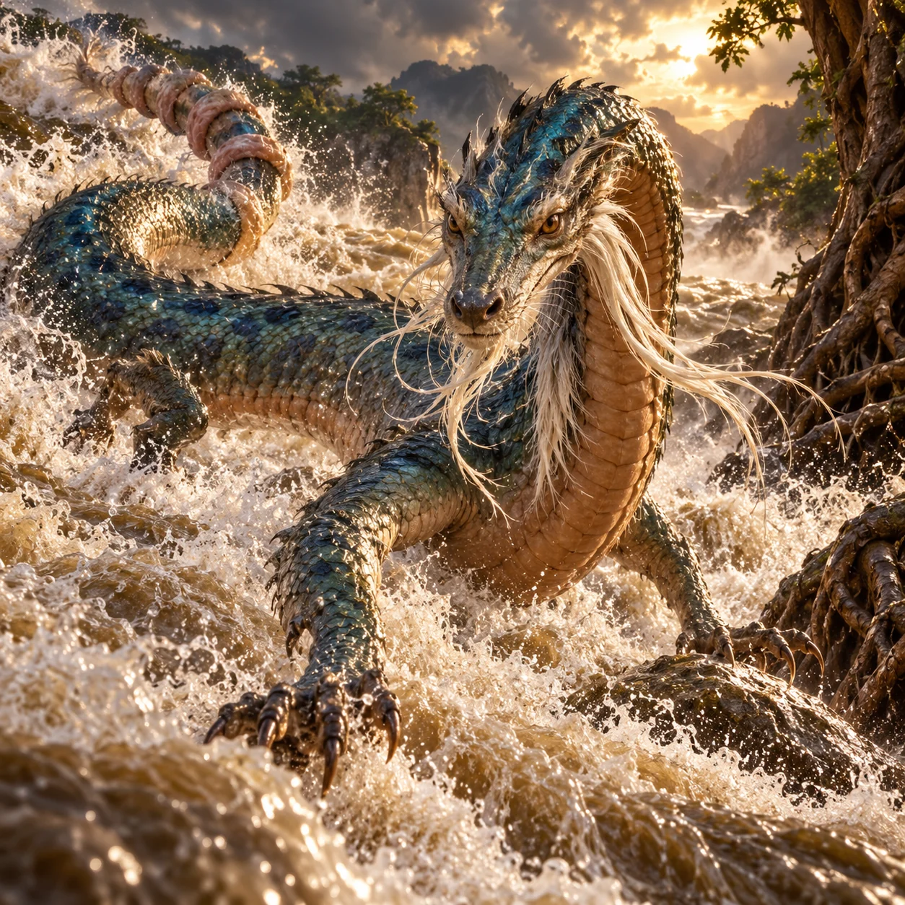
Pei Yuan small-headed four-legged jiao
Aura: Water floods around the emerging dragon, following the documented belief that jiao hatching brings floods; no fire or lightning Basis klaim: jiaolong-c02, jiaolong-c10, jiaolong-c13, jiaolong-c08, jiaolong-c09, jiaolong-c01, jiaolong-c04.
Audit ciri dan sumber
- [object Object]
- [object Object]
- [object Object]
Root melihat native PNG: satu kepala relatif kecil, leher panjang sempit berjumbai putih, dada sienna, sisik berbintik biru-hijau dan cincin daging merah muda di ekor c13. Dua kaki depan jelas, kaki belakang tersembunyi air/coils; tubuh ular-naga koheren. Tanpa tanduk atau sayap; air banjir c09 aktif membingkai emergence dan tatapan langsung. Tidak ada api/petir/aura/teks. Tujuh cek Sangar lulus.
Review sumberONE original square premium painterly cinematic Mythics illustration of JIAOLONG, the Chinese water dragon in the specific Pei Yuan passage preserved by Li Shizhen.
ANATOMY: one SMALL dragon head, thin long neck with WHITE tassels, a continuous long snake-like scaled body, exactly FOUR legs, sienna chest, BLUE-GREEN SPOTS on its back, FLESHY RINGS around its tail; NO horns or wings. [jiaolong-c02, jiaolong-c10, jiaolong-c13]
MOMENT: Drive up through violent river water, twist toward the viewer with small head thrust forward and all four limbs attached to the same coherent body.
POWER: Water floods around the emerging dragon, following the documented belief that jiao hatching brings floods; no fire or lightning. [jiaolong-c08, jiaolong-c09]
SCALE & CAMERA: extreme low angle and close foreground, subject dominates the frame and its distinguishing features read clearly at 200 pixels. Numerical scale is asserted only when documented; otherwise dramatic close perspective.
LIGHT & WEATHER: one strong warm sidelight, antique-gold rim light, walnut shadows, high contrast with visible dark details and appropriate natural moisture.
SURFACE: rough physically convincing natural surfaces, textured scales or feathers or coarse fur as applicable, painterly cinematic realism rather than plastic.
SETTING: a southern Chinese river channel in a natural flood, tangled riverside roots. [jiaolong-c01, jiaolong-c04]
MOOD: dangerous or awe-inspiring as appropriate to the tradition; commanding, alert and actively moving; sacred beings treated with respect.
HARD CONSTRAINTS: no text, letters, pseudo-glyphs, logos, watermark, border or frame; no extra heads, limbs, eyes or fingers; no nudity or explicit gore; no film, game, anime or comic design; no generic glow aura, neon outline, energy ribbons or luminous colored mist. One single square image.
Kukulkan
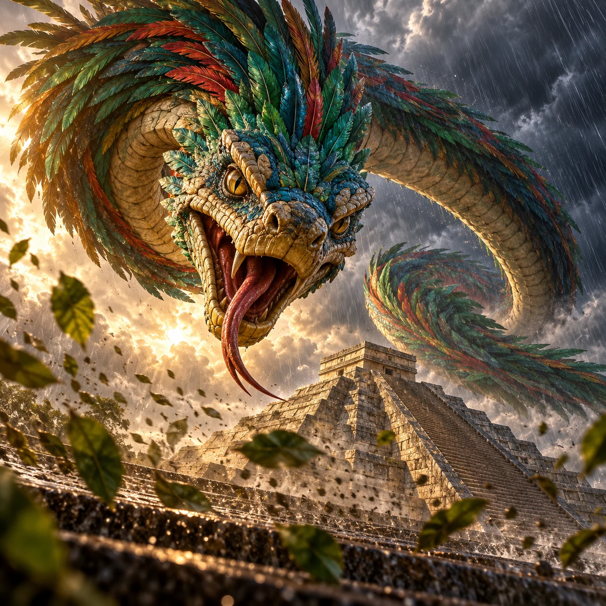
living feathered serpent descending over Chichen Itza
Aura: The serpent tail drives physical wind: rain tilts, leaves and dust sweep across the stone steps; storm clouds and rainfall follow documented rain and wind domain Basis klaim: kukulkan-c03, kukulkan-c05, kukulkan-c16, kukulkan-c11, kukulkan-c17, kukulkan-c18, kukulkan-c02, kukulkan-c10.
Audit ciri dan sumber
- [object Object]
- [object Object]
- [object Object]
Root melihat native PNG: satu kepala ular, dua mata, tubuh ular kontinu tertutup bulu tanpa kaki atau sayap terpisah; varian feathered snake c05/c16. Kepala turun konfrontatif di atas El Castillo c10; hujan dan angin mengangkat daun/debu sesuai domain c17/c18 serta ekor c11. Tanpa glyph/text, neon, gore atau desain film/game. Keagungan dewa melalui perspektif dan cuaca; seluruh tujuh cek Sangar lulus.
Review sumberONE original square premium painterly cinematic Mythics illustration of KUKULKAN, the Yucatec Maya feathered serpent, bringer of wind and rain.
ANATOMY: exactly one serpent head, two eyes, one continuous feather-covered serpentine body, feathered crest and mantle, NO legs or arms, NO separate wings in this selected feathered-snake variant. [kukulkan-c03, kukulkan-c05, kukulkan-c16]
MOMENT: Descend in a vast curling sweep above the Chichen Itza temple stairs, lowering the head toward the viewer as the tail sweeps wet leaves.
POWER: The serpent tail drives physical wind: rain tilts, leaves and dust sweep across the stone steps; storm clouds and rainfall follow documented rain and wind domain. [kukulkan-c11, kukulkan-c17, kukulkan-c18]
SCALE & CAMERA: extreme low angle and close foreground, subject dominates the frame and its distinguishing features read clearly at 200 pixels. Numerical scale is asserted only when documented; otherwise dramatic close perspective.
LIGHT & WEATHER: one strong warm sidelight, antique-gold rim light, walnut shadows, high contrast with visible dark details and appropriate natural moisture.
SURFACE: rough physically convincing natural surfaces, textured scales or feathers or coarse fur as applicable, painterly cinematic realism rather than plastic.
SETTING: Chichen Itza with the El Castillo temple stairway subordinate to the living feathered serpent; no glyphs or lettering. [kukulkan-c02, kukulkan-c10]
MOOD: dangerous or awe-inspiring as appropriate to the tradition; commanding, alert and actively moving; sacred beings treated with respect.
HARD CONSTRAINTS: no text, letters, pseudo-glyphs, logos, watermark, border or frame; no extra heads, limbs, eyes or fingers; no nudity or explicit gore; no film, game, anime or comic design; no generic glow aura, neon outline, energy ribbons or luminous colored mist. One single square image.
Limokon
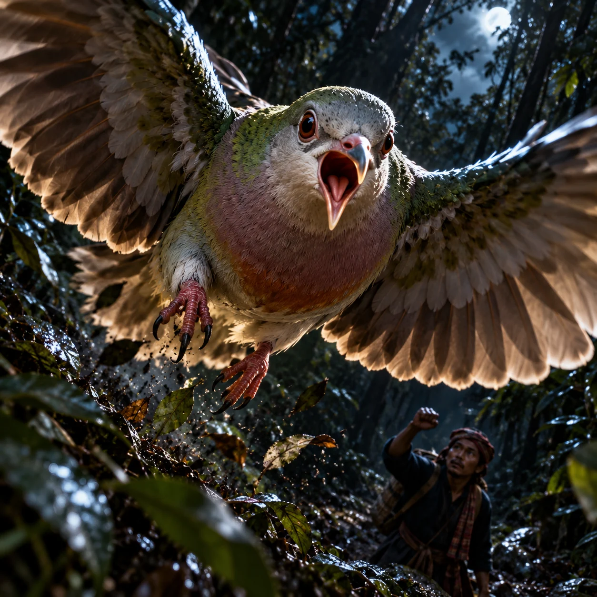
omen fruit dove actively halting a traveller
Aura: The prophetic call is represented by the physically halted traveller and raised fist only; no visible sound rings or magical glow Basis klaim: limokon-c03, limokon-c16, limokon-c04, limokon-c05, limokon-c09, limokon-c10, limokon-c01.
Audit ciri dan sumber
- [object Object]
- [object Object]
- [object Object]
Root melihat native edit: satu fruit-dove natural dengan dua sayap dan dua kaki, sekarang benar-benar airborne menghadap depan, paruh membuka peringatan, cahaya hutan malam low-key dan traveller mengepalkan fist c05/c09 menghentikan langkah. Ukuran tubuh tidak diubah; dominasinya perspektif sangat dekat. Keagungan utusan/pertanda berasal dari call yang ditaati, bukan aura atau anatomi baru. Dua kaki meninggalkan cabang, gerak sayap dan daun fisik; tujuh cek Sangar lulus sebagai pembawa pertanda sakral, bukan monster jahat.
Review sumberEdit the reference image into a forceful, awe-inspiring omen moment. Preserve the exact natural fruit-dove species and normal anatomy, ONE head, two natural eyes, exactly TWO wings and TWO feet, NO glow, NO invented features, and keep the clothed adult traveller raising his closed fist in response to the warning call [limokon-c04,c05,c09,c10,c16]. Change the bird from perching to a fully airborne explosive launch directly toward the viewer: both feet clearly leave the branch, wings sweep downward powerfully, feathers rake the air, beak open in a loud warning. Very close extreme-low camera; face and forward-spread wings dominate 85 percent of the frame, motion and direct gaze give sacred authority without turning it evil. Change the lighting decisively to DARK LOW-KEY FOREST TWILIGHT: black-green foliage, dense deep shadows, ONE narrow cold moonlight source as hard rim on wings and head, faint antique-gold reflection on the beak, tiny traveller in deep shadow beneath the bird. Gusted leaves respond naturally to wing motion, no magic effects or sound rings. Absolutely NO bright daylight, NO gentle sunbeams, NO cute resting bird, NO perched pose, NO decorative birdwatching portrait. No text, symbols, logo, border, watermark, nudity or gore. One square premium painterly cinematic Mythics image.
Medjed (fish)
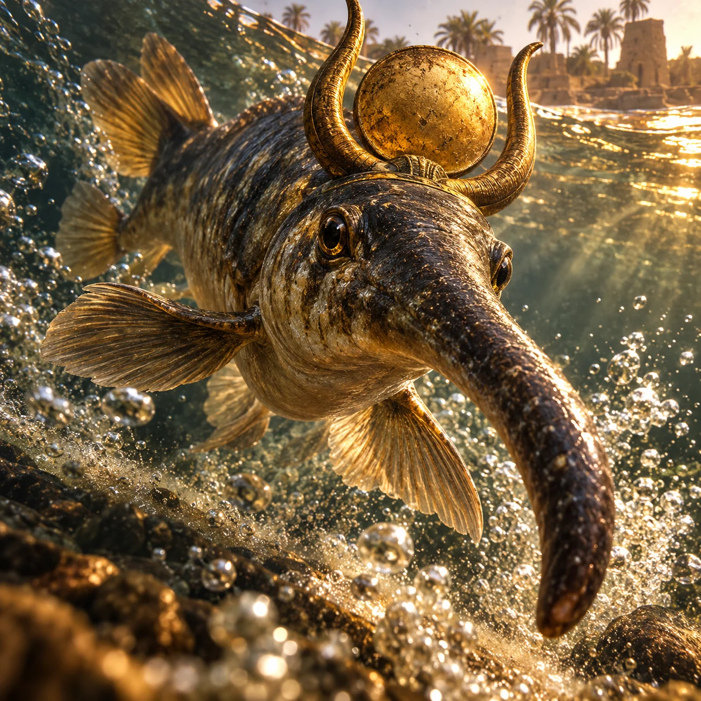
living sharp-snouted sacred fish with horned sun-disc
Aura: No documented active power; sacred presence through the clearly visible horned sun-disc crown and commanding close framing only, no electric beams Basis klaim: medjed-fish-c01, medjed-fish-c03, medjed-fish-c04, medjed-fish-c05.
Audit ciri dan sumber
- [object Object]
- [object Object]
Root melihat PNG native: ikan hidup bernose tajam menurun, dua mata dan sirip koheren, mahkota cakram matahari bertanduk dua c04/c05 sangat jelas. Kepala/snouthidung mendominasi gerak maju bawah air, tidak terbaca ikan biasa karena atribut sakral; gelembung akibat renang bukan kuasa. Tanpa organ Osiris/gore, tanpa listrik/neon/teks. Tujuh butir Sangar lulus.
Review sumberONE original square premium painterly cinematic Mythics illustration of MEDJED-FISH, the sacred Egyptian elephantfish of Oxyrhynchus in its horned-sun-disc iconography.
ANATOMY: one living elephantfish with a long DOWNWARD-curving sharp snout, two natural eyes, coherent fish body and ordinary fish fins, ONE crown consisting of an antique golden SUN DISC held between TWO curved horns; no human arms or legs. [medjed-fish-c01, medjed-fish-c03, medjed-fish-c04, medjed-fish-c05]
MOMENT: Surge toward the viewer underwater, twisting its sharp snout into close foreground and displacing a burst of real bubbles.
POWER: No documented active power; sacred presence through the clearly visible horned sun-disc crown and commanding close framing only, no electric beams. []
SCALE & CAMERA: extreme low angle and close foreground, subject dominates the frame and its distinguishing features read clearly at 200 pixels. Numerical scale is asserted only when documented; otherwise dramatic close perspective.
LIGHT & WEATHER: one strong warm sidelight, antique-gold rim light, walnut shadows, high contrast with visible dark details and appropriate natural moisture.
SURFACE: rough physically convincing natural surfaces, textured scales or feathers or coarse fur as applicable, painterly cinematic realism rather than plastic.
SETTING: river water at Per-Medjed in Upper Egypt, a shadowed riverbank hinted above the waterline. [medjed-fish-c01, medjed-fish-c03]
MOOD: dangerous or awe-inspiring as appropriate to the tradition; commanding, alert and actively moving; sacred beings treated with respect.
HARD CONSTRAINTS: no text, letters, pseudo-glyphs, logos, watermark, border or frame; no extra heads, limbs, eyes or fingers; no nudity or explicit gore; no film, game, anime or comic design; no generic glow aura, neon outline, energy ribbons or luminous colored mist. One single square image.